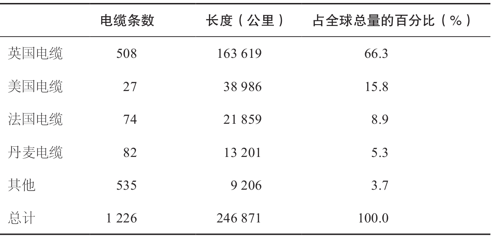
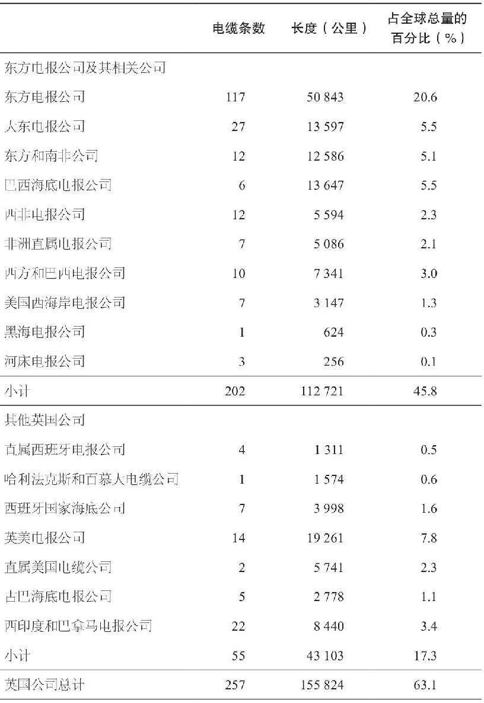
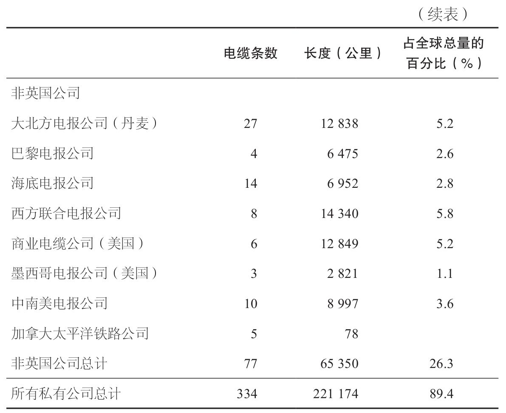

你能发出闪电，叫它行去，使它对你说，“我们在这里”？
——《约伯记》
直至19世纪中叶，信息还是没有人跑得快。它仍然以圣经时代的老方式传送着，只在运输工具上有点儿小改进，例如装个马蹬，改良一下船帆等。1830年，一条信息从伦敦送到纽约或孟买所需要的时间与达伽马和麦哲伦时代几乎差不多。信仍然是手写的，然后用四轮马车送到最近的码头，再用船运至世界各地。沿途任何事情都有可能发生，可能是信本身的问题，也有可能是周遭环境的变化。因此，1830年的世界还是相当狭隘的世界。人们的注意力主要集中于当地村镇发生的新鲜事，着力于经营那些离家只有几天路程就可以完成的生意。毫无疑问，中世纪晚期的远洋航海革命给欧洲开辟了大片的新领地，18世纪末期蒸汽动力技术的发展预示着交通技术的迅速进步。但在通信领域，1830年与1380年只有微小的差异：世界大到不可测，把信息从它的这头送到那头看来永远也无法做到。

这种情况在不到20年的时间里被改变了。1838年，塞缪尔·莫尔斯在美国国会上展示了他的电报机原型，他宣称，使用它可以让信息瞬间横跨全国，甚至可能环绕世界。大多数国会议员对此嗤之以鼻。然而，仅仅14年后，到1852年，美国共铺设了2.3万英里的电报线路，电报业迅速成长。到1880年，将近10万英里的海底电缆穿越了北大西洋，跨过了红海和加勒比海。同样的信息，在1838年从伦敦送至纽约需要几个星期甚至几个月的时间，而此时只需要几分钟。世界突然变得小多了。
电报的广泛应用，就和现在的互联网一样激动人心。观察家们称为有史以来最伟大的发明，技术创新中的最高成就。当时的两位作者写道：“在所有现代科学的伟大成就中，电报是最伟大的、对人类最有用的发明。简直没有什么词语可以描述这个伟大的奇迹。”1858年，当第一条横穿大西洋的电缆铺设完成时，美英两国对其大加赞赏。伦敦的《泰晤士报》滔滔不绝地评论说：“自哥伦布发现新大陆以来，没有任何事物在任何程度上如此巨大地拓展了人类活动的范围。”美国总统詹姆斯·布坎南（James Buchanan）说道：“这是一个更加辉煌的成就，对人类来说，这比征服土地还有用得多。”因为他们的成就以及对全球的贡献，电报业的技术和商业先驱者们在全世界范围内受到了热烈的欢迎。多数人认为，电报将会改变商业和政治的面貌。它将拉近距离，拓展商业，促进和平。
在某种程度上，电报确实产生了这样的影响。电报不愧为一项非凡的创新，在某些方面，它甚至比现在的互联网更令人瞩目。它使过去看来遥不可及的距离不再成为交流的障碍，它开阔了几乎全世界人的视野。电报诞生以前，几乎不存在国际新闻这种东西；电报出现以后，这类事物广泛传播，几乎无法回避。电报产生以前，无论是商业还是政治都受到地域的限制：对于在波士顿的总公司来说，要给莫斯科的代理人提供详尽的指导简直不切实际，对于位于巴黎的中央政府而言，要保持对布宜诺斯艾利斯的外交人员的严密监视也同样不可能。与过去不同的是，电报产生之后，信息可以在分布最广的领域方便而迅捷地流动，世界变小了，商业和政治都迅速成长起来。
这种范围上的变化大大拓展了技术的边界，而且导致了现有标准及规则的破裂。和大多数技术突破一样，电报的兴起带来了一定程度的混乱。首先出现的是商业混乱，为数众多的发明者吵嚷着要许可权，并为获得专利权彼此控诉。其次，在军事领域也产生了混乱，指挥官们担心敌方间谍会迅速将他们的计划传送至国外。电报还引起了新闻行业的惶恐，因为一些观察家认为电报将使报纸成为过时的东西。在合作与协调方面也出现了很大的麻烦，企业家们争得你死我活，完全无法共处。
在将近20年里，这种混乱占据着统治地位。电报行业内没有规范，只有对其潜力的强烈预感和对近在咫尺的财富的些许预期。电报业的先行者们陶醉在这个新行业中，他们竞相追逐电报的速度，而强盗们（剽窃者）则用竞争性的专利武装自己，他们的产品几乎没有什么分别。政府关注或支持这个行业，但几乎没有哪个政府试图给它制定一个规范（至少一开始时是这样），这个行业太新了，也太混乱了。
然而，随着技术的兴起和最成功的先驱者们对这个行业初始轮廓的刻画，行业混乱带来的代价越来越明显，制定规范势在必行。规则制定了，费用确立了，原先分离的线路按规定连接了起来，而且要使用统一的语言。国有及私营的大公司被建立起来，并在行业内紧密联系，详细讨论稳定和规范本行业的规程。这些大机构中，没几个收到过像对创新者和先驱者那样的溢美之词，没有一个在行业混乱的早期被兴奋的心情所包围。但归根结底，正是这些公司和相应的规范使电报业爬出了混乱的泥沼，并成为现代商业中重要的一部分。
信号简史
从中世纪开始，空想家和实践者就已经开始试图切断信息与物理移动之间的联系，即信和笨重的运输工具之间的联系。他们意识到，任何系统都要由两个主要部分组成：第一，要用某种缩写或代码代替复杂的书写语言；第二，采用某种可以通过空气传播信号的方式，用声音或视线代替运输工具。这些基本的原理甚至在古希腊时就得到了认同，古希腊人使用火光信号的复杂系统做过尝试——他们在邻近的山头点起火以警示敌方的前进动向或通报胜利。但是由于这些方式都无法确保消息的准确性，因此重要的信息还是依靠手工传递这种比较可靠的方式。
第一个真正的突破是在1791年，当时法国一对兄弟：克洛德（Claude）和勒内·沙普（RenéChappe）通过一个尚不成熟的系统互传信息。该系统由铜锅和运转同步的钟组成：铜锅的响声对应着钟面上的数字，钟面上的数字又可以根据预先排列好的代码进行翻译。这个系统又吵又笨重，但却管用。经过几个世纪缓慢的技术改进，最后终于由兄弟俩突破了地域的限制，实现了通过声音（一分钟可传12英里）而不是通过脚步来传递信息。
他们的下一个发明从某种意义上来说更简单，但却更加令人瞩目。两兄弟意识到敲击铜锅的声音只能传递很短的一段距离，便把视线转向了光。他们用一个装备在5英尺 [1] 高的木塔顶上可调整的木臂来代替铜锅，通过将木臂旋转至不同的位置，两兄弟可以组合出98种不同的信号。视线代替了声音和脚步，信号已近乎实现了瞬间传输。
从一开始，兄弟俩的发明装置就带有政治色彩。当两兄弟在巴黎郊外首次演示他们的新“电报机”时，一群人毁掉了这个装置，他们担心这会被用于和那些监狱中的保皇主义的同情者们进行通信。此后不久，法国国民议会成立了一个委员会，专门调查电报机用于军事用途的潜力。不久，大会授权建造三个完全相同的电报塔，总跨度约为20英里。到1798年，法国已拥有从斯特拉斯堡延伸到敦刻尔克的电报线路，军事胜利的消息通过这个网络得以定期传送。
当法国的系统付诸使用，欧洲其他国家马上紧追其后，建造起自己的木塔，使用各自不同的信号和代码。到19世纪30年代中期，有近1000个电报塔投入使用。与早期的通信方式相比，这些木质网络显得非同寻常。它们容易建造，使用方便，传递信息比以往的任何方式都迅速。然而，这种方式也存在一些明显的、令人沮丧的问题。首先，尽管这个系统比以往的任何方式都要快许多，但相对而言它的速度还是比较慢的，因为所有到达一个站点（视线终点）的信息都需要重新传送（中继）。另外，它仍然比较笨重，易被干扰和破坏，使用它需要依赖专业的操作人员和晴朗的天气。
有希望解决电报的这些问题的是电——一种能量流，可以通过任意长度的导线来瞬间传递信号。从1729年英国的斯蒂芬·格雷（Stephen Gray）首次发现电可以通过金属丝传导开始，发明家们就尝试用电子脉冲来代替当时的敲击铜锅和旋转木臂来传输信号的各种方法。从理论上看，这种传输很简单：金属丝一端的电子脉冲将会激活另一端的某种接收装置。不同的脉冲数量和持续时间与不同的声音或木臂的不同位置一样，代表了不同的字母和数字，并被拼凑成一条可辨识的信息。然而，在实践中，电的应用被证明是非常失败的。几十年来，欧美的发明家们尝试了各种工艺和组合方式——以悬浮的小球、分解的水、并联的导线分别代表字母表中的一个字母。但是，没有一种方法是完全成功的。这时，莫尔斯出现了。
作为一个艺术家和教授，莫尔斯并非现代电报业先驱者的代表人物。他生于1791年，出生时名为塞缪尔·芬利·布里斯·莫尔斯。在新兴的电报领域，莫尔斯姗姗来迟，而且没什么准备。他没有技术背景，只在1832年了解过电磁方面的一些新进展。他厌倦了绘画和他在纽约大学的学生们，却几乎是一下子就被用电来传输信息这样的想法吸引住了。在接下来的几年里，他苦学这个新兴学科的原理，然后将他的新发现付诸实践。他和化学家、工程师们一起工作，还找到了一个有实力的赞助人——艾尔弗雷德·韦尔，他来自一个富有的制造商家庭，刚刚从纽约大学毕业。通过数轮修改，莫尔斯确立了一套独特的方法。在他的系统中，用数字对单词进行编码并转换成电脉冲，然后通过金属丝传递到接收站，再由一个电磁控制的杠杆装置将脉冲记录到纸上。不久后，点和短线——人们熟知的莫尔斯电码——将替代数字码。到1835年，莫尔斯的想法变成了精巧的实物：他制造了一个用电传输并记录代码的电报机。
在发明电报机，甚至在说服大家电磁可以提供最有效的方式使电力用于信息传输的过程中，莫尔斯绝非孤身一人。实际上到1838年，至少有62人已经声称自己发明了第一台电报机。然而，莫尔斯是第一个将他的发明推出实验室，进入商业和政治领域的。他花了6年时间完善他的原始装置、试验、改进，最终让它接受人们的审视。此后，他的余生都花在了与这个新机器相关的事项中。
莫尔斯前往华盛顿
从一开始，莫尔斯就意识到电报并不仅仅是传输信息的新奇方式。他认为，电报是信息传输的根本变革——是一种加速全球通信、挑战已有权威的渠道。由于几乎所有的商业企业大概都希望能以光的速度来传送和获取信息，这正是莫尔斯现在可以提供的，因此这还是一条可以迅速创造大量财富的大道。莫尔斯看到了所有的这些可能性并马上行动起来——实际上，在他的发明还没有走出实验室之前，莫尔斯就已经行动了。尤其值得注意的是，对自己的这一远见，他采取的是非商业性的行动。莫尔斯已经预见了未来，他的第一反应是将自己的发明呈递给美国政府。1838年，他是这样说明的：
显然，很容易就可以预见到，这种瞬间通信的方式必将极具影响力，它能否被正确地应用，将决定其带给人类的是利还是弊。如果电报被投机商所掌握，他们会垄断这种产品，使之成为其致富的工具，同时导致成千上万的企业破产倒闭。就算电报仅仅被政府所掌握，它也有可能成为损害合众国的工具。
考虑到这些可能会出现的麻烦，我谦恭地提出浮现在脑海里的补救方法。第一步，让使用电报的专有权归属政府，然后政府通过一个详细制定的款项额度，以专利的方式提供给提出申请的个人或私营企业，在政府认为合适的限制与规范之下，赋予他们在任何两个地方之间铺设电报线路、传送信息的权利。
当然，莫尔斯这样做并不完全是出于爱国心：在很大程度上，他前往国会是要国会资助他的电报的商业发展。但他看起来似乎很确信电报将会带来弊病，尤其是在垄断方面的弊病。莫尔斯后来写道：“毫无疑问，政府将最终占有这项发明，因为从各方面的考虑来看这是必需的。不仅仅是因为如果电报由政府管理，在总体上对政府和大部分公众有直接的好处，还因为如果电报被一个公司垄断了的话，会带来诸多弊病，必须防止这些弊病。”这就是先驱者中的杰出人物。
然而，国会议员们的思想却要比莫尔斯落后几十年，他们认为用电来传输信息不过是工匠们的幻想，电报的未来还是要建立在木质信号站的基础上。莫尔斯的首次演示几乎没有赢得什么支持者，因此他长途跋涉去了欧洲，希望欧洲政府会乐于提供帮助。但事实并非如此。在英国，竞争对手们说服了英国司法部部长不授予莫尔斯电报专利权；在法国，莫尔斯得到了专利权却没有资金支持。俄国的情况更糟，沙皇尼古拉一世担心这种新机器会被用作颠覆政府的工具，甚至禁止在俄国出现任何关于电报的文字。莫尔斯沮丧地回到了美国，回到了他的纽约大学学生身边。
虽然经受了这些挫折，莫尔斯还是继续将他的空闲时间花在摆弄电报机上，不断完善它的结构，努力为它的前景寻求支持。1842年，他再次来到国会。他把金属传输线连接在两个会议室之间，成功地实现了信息传输，国会终于被说服了。1843年2月，莫尔斯得到了3万美元的支持，并获准铺设从巴尔的摩到华盛顿特区之间的电报线路。莫尔斯欣喜若狂，他在给他的兄弟西德尼的信中写道：
国会完全被征服了，他们中的很多人甚至告诉我，他们准备提供任何我需要的东西。连最顽固的反对者也成了赞赏者。H·C·约翰逊（一位来自田纳西州的议员）曾经在上一次会议时把我的电报系统比作动物磁力说的“野把戏”，这次他走过来对我说：“先生，我认输了，这是一个惊人的发明。”
到1843年8月，莫尔斯已制造了160英里长的缆线并开始铺设线路；1844年5月24日，他坐在华盛顿的电报桌前将“上帝创造了何等奇迹！”这条信息传送给了在巴尔的摩的同事。一年以后，这条电报线对企业开放，成为世界上第一次商用电报实践。然而，电报线的运营似乎很快就证实了美国国会最坏的担忧。在公开运营后的头三个月里，巴尔的摩——华盛顿线路的支出是1859.05美元，而收入只有193.56美元。接下来的三个月，情况同样糟糕。看来这是一桩赔本的买卖，国会决定放弃对巴尔的摩线路的支持，莫尔斯和他的支持者们不得不求助于私人资本。从那以后，美国的电报业几乎一直是私营产业。
回想起来，巴尔的摩——华盛顿线路商业上的失败，源于一个既简单又显而易见的因素：虽然公众对电报技术有强烈兴趣，但绝大多数人没有看到它的实用价值。像催眠术或通灵术一样，电报看起来像一个异类，可望而不可即。在电报投入使用的头4天，只有一个人真正付费使用了它。然而，慢慢地，电报线路越铺越长，使用者也越来越多。1845年，莫尔斯和他的支持者们[包括邮政部前部长阿莫斯·肯德尔（Amos Kendall），企业家、发明家埃兹拉·康奈尔（Ezra Cornell）]出资15000美元成立了电磁电报公司（Magnetic Telegraph Company）。他们的计划野心勃勃而又直截了当：建立一个覆盖全美商业通道的电报网络。莫尔斯仍然执着地认定，如果电报线路确实有效，消费者最终会把它当作一个服务项目而不是一个技术怪物来看待。换句话说，供给能够创造相应的需求。在很大程度上讲，他是对的。随着线路的扩张，随着人们慢慢地习惯于这个新事物的存在，商业贸易逐渐开始尝试使用电报了。第一批顾客是那些大量使用信息的人：报业人员、股票经纪人、彩票组织者，然后是政府和一般的企业，最后是普通百姓。
对不同的使用者来说，电报的应用意义有所差别。对信息密集型产业而言，电报无疑是一场革命，因为它的速度使很多从来不可能的事情成为可能。新闻首次可以一经发生就被广为报道。同样地，股票价格可以及时反映出市场力量间的相互作用，获得市场信息的人们可以成功地利用它以获得商业利益。
对其他行业来说，电报的意义虽谈不上是革命性的，但同样重大。它为企业提供诸如报价单、新产品信息这样一些它们一直使用的信息，同时传播的速度也显著提高了。它的影响是出人意料的。突然之间，过去进度缓慢的业务在几个小时甚至几分钟之内就能完成。波士顿的商人头天晚上发出指令，第二天就可以从亚特兰大订购货物；俄亥俄的农场主们可以每天查看芝加哥的猪肉价格。还是老生意，但交易的速度大大提高了。当商业界的一部分人开始依赖电报时，相关的其他企业也不得不跟上脚步，这成了电报网络效应最早的例子。到19世纪50年代早期，许多私营企业，尤其是聚集在华尔街或其他金融中心的企业，每天要依靠电报传输6~10条信息。
政府和早期电报的关系更为复杂。与莫尔斯在巴尔的摩——华盛顿线路上的合作失败后，美国国会从电报的商业应用领域撤出了。但是政府仍然是电报积极的使用者，政治新闻是早期电报的主要组成部分。实际上，莫尔斯最早的成功案例之一发生在1844年5月，当时民主党全国代表大会反对他们处于领先地位的总统候选人马丁·范布伦（Martin Van Buren），而支持新贵詹姆斯·波尔克（James Polk）。为了赢得范布伦的支持者，会议提名范布伦的朋友赛拉斯·赖特（Silas Wright）为副总统。位于新电报机两端的莫尔斯和韦尔把这个消息传递给了赖特，然后又接收了赖特的拒信，而会议大厦外的任何人都还不知道这个消息呢。从这以后，美国政府将电报视为在幅员辽阔的国土上传递信息的重要技术和有效手段。虽然他们还不能确信电报可以用来干什么（这将在1861~1865年的南北战争时期得到验证），但他们至少意识到了电报拥有巨大的力量。
公众对电报也怀有类似的敬畏和困惑。在19世纪40年代，发一封电报的费用大约是一个词25美分，这对普通居民或日常使用来说实在是太昂贵了。因此，人们把它看作是一项技术奇迹而不是一种有用的工具，把它看作磁力学壮举的见证而不是可以被实际应用的东西。在电报产生的最初时期，就像韦尔暴跳如雷地写道的那样，人们愿意排队来电报收发室仅仅是为了说“他们见过这玩意儿”，“并不关心自己是否真的了解这个东西”。他们通常对这个新机器有奇怪的反应，例如有个女人坚持要用它寄送泡菜，还有人对机器的工作原理产生了各种奇怪的想法。然而，随着时间的推移，即使是普通百姓也开始认识到了电报在私人领域的潜在用途。他们意识到电报可以传送重要的消息——死亡、疾病、计划变更——电报的速度值得人们花那么多钱。人们还意识到即使是私人信息的价值也和时间密切相关，电报的真正价值在于它能节约时间，快速提供各种有关的重要私人信息。一次调查显示，截至1851年，“社会”信息（区别于商业信息）占了美国电报业务量的9%。
然而，即使人们对电报的态度有了改变，电报的昂贵费用和其他一些制约因素还是限制了私人对它的利用，只有最富有的那些人和出了最紧急的事情时，才会用到它。在19世纪40年代，电报仍然是一项前沿科技，发明家们热衷，企业界好奇，政府则热切关注它的发展。它还没有广阔的市场，甚至不具备形成广阔市场的基本要素。为了下一步的发展，像莫尔斯这样的创新者们不得不迎来下一次浪潮的开拓者——企业家，他们将把创新持续下去并将电报标准化，然后使其深入上百万用户的日常生活。当然，这正是即将要发生的事情。
商业扩展
在美国，电报的商业应用始于1845年，并从围绕着莫尔斯的一群企业家开始逐步扩张。这一团体的核心是电磁电报公司，驱动力来自阿莫斯·肯德尔，这位邮政部前部长辞了职，加入了莫尔斯的团体。
在说服了莫尔斯私营电报可以从国营电报的失败中重新站起来之后，肯德尔和他的伙伴在1845年建立了私营的电磁电报公司（通常称其为电磁公司），并制定了一个富有野心的覆盖全美的电报网计划。然而，显而易见的问题是，仅靠电磁电报公司不可能筹集到实现这个计划所需要的巨额资本。于是，公司的初创者们构想了一个同样野心勃勃的商业架构，该架构使电磁公司在保持控制力的同时，可以将扩张的成本和风险转移到新的投资人身上。也就是说，肯德尔和他的合伙人把电磁公司设计成为一个控股公司，使之成为那些既相互独立又相互联系的、组成全美电报网络的诸多公司的中枢。电磁公司将继续持有莫尔斯的技术专利权，并持有所有相关公司50%的股权，但是其他投资人要自行负责地区线路的资本投入，并将这些地区线路接入电磁公司的主干线。显然，肯德尔的设想是，用可兼容的技术使所有的电报公司都成为同一个“家族”的一部分，共同分享持续的网络扩张（将越来越有价值）带来的利润。肯德尔强调说：“无论做什么，我们都要协商一致的规划，共同前进。只有协调行动，我们才能做好任何事情。为此，在观点不一致的时候，我们需要彼此做出一些让步。”
因此，电磁公司成立伊始就在合作方面进行了尝试，它试图通过在几个独立公司之间的合资和专利共享来一起拓展市场，并获得了成功。在公司运营的第一年，莫尔斯的一个长期支持者、电磁公司的合伙人弗朗西斯·史密斯（Francis Smith）建立了自己的公司：纽约——波士顿电磁电报协会，拓展纽约与波士顿之间的电报服务。肯德尔紧随其后，出资20万美元成立了奥尔巴尼和布法罗电报公司（Albany and Buffalo Telegraph Company）。接着，其他先驱者也加入进来：约翰·巴特菲尔德（John Butterfield），一个来自纽约州中部的驿车线经营者，购买了专利使用权，扩展了马萨诸塞州到纽约州的电报服务；爱尔兰移民亨利·奥赖利，一个商业奇才，同意将电报网络覆盖到从东海岸直至大湖区的广大领域。在接下来的5年里，奥赖利相继成立了7家独立的电报公司，铺设了从费城到芝加哥的电报网。
到目前为止，一切顺利。到1850年，电磁公司的电报业务蒸蒸日上，运作良好，数十家公司争相把它们的独立线路接入到电磁公司日益壮大的可兼容网络中来。然而，这个系统刚刚建立，马上就有两个问题出现了。它们一个来自外部竞争，另一个则源于内部斗争。这两个问题迅速将这个新兴的市场推向混乱的泥沼。
第一个问题源自那些对莫尔斯“王者”地位发起挑战的诸多竞争者。虽然莫尔斯已经在电报系统的商业应用上击败了其他发明者，但是一旦技术的应用发展到关键阶段，其他人还是会争先恐后地跳出来争夺。先驱者和“强盗”们并没有相差太远。
有两个莫尔斯电码的变种取得了特别的成功。一种是由苏格兰人亚历山大·贝恩（Alexander Bain）在1840年发明的，把电磁信号记录在一张经过化学处理的纸上，当电流通过时，这种纸会改变颜色。另一种是在1844年由新英格兰发明者罗亚尔·豪斯（Royal House）设计的，他把莫尔斯的装置稍微改进了一下，使电磁信号可以直接转换为字母。诚然，这两种系统都有其操作缺陷。虽然豪斯的系统不需要再次转换信息，但它依赖于一种笨拙的手摇曲柄装置，这种装置一旦坏了非常难修理。贝恩的系统虽然比豪斯和莫尔斯的系统更快，但如果附近有其他线路，它常常会收到错误的信号。然而，通常情况下，这两个系统几乎和莫尔斯的系统运行得一样好。这意味着，如果有企业家不想接受电磁电报公司的条件，或不愿意加入以莫尔斯为主导的商业帝国，就可以使用贝恩或豪斯的技术自行发展，在拥有技术所有权的基础上建立起与之竞争的系统。然而，因为显然这两种系统都和莫尔斯的系统不兼容，每建立一条贝恩或豪斯的新线路，实际上都缩小了美国电报市场的可运营规模，虽然市场在成长，却被分成了不能相互联系的小块。具有讽刺意味的是，此后竞争系统越快速发展，电报服务的质量反而越差，“电报”变成了“蜗牛邮件”，信息再一次需要通过国家邮政网络系统来传送。
与此同时，即便在电磁公司“家族”内部，关系也迅速恶化。到了19世纪40年代后半期，在史密斯、埃兹拉·康奈尔这样的早期投资者队伍中加入了蜂拥而至的新的投资人和金融家，肯德尔曾认为新人的加入是电报成功的关键所在。结果，成百上千热情的投资人加入了进来，但他们中的许多人对技术和经营都一无所知。他们被电报的商业前景所吸引，竞相铺设自己的网络甚至让线路随意绕在树上、穿过河流，或拙劣地以蜂蜡绝缘。这些公司没有雄厚的资本支持，且多数都没有可靠的专利权，但所有人都尽其所能地快速向前。
到19世纪50年代中期，正当电报业的发展穿越了美国中部时，一些最冒进的公司开始窘迫了。在北方，电磁公司的两大竞争对手（伊利湖和伊利——密歇根线路）都几乎难以弥补成本；在俄亥俄河谷，奥赖利庞大的俄亥俄、印第安纳、伊利诺伊电报公司都慢慢陷入破产的境地。当时还有几十家，甚至可能几百家公司也是这样：小公司无法取得进展，大一点儿的公司设法收回了建设成本，但却从未给股东分配过一分利润。事实上在这个时期，几乎所有的美国电报公司都濒临破产，许多公司放弃了努力，铺设的电报线被废弃在树端，投资者转而去寻求别的投资方向。
给这些早期的公司带来苦恼的原因，一部分源于它们自己的热情。许多公司被电报王国的前景所吸引，铺设线路时太快、太粗糙。它们为开展业务筹措资金，向地方团体寻求融资，希望利润会滚滚而来。但是，利润却没有来。虽然此时的电报无疑已经成为一种被公众接受的交流模式，但它对广大的潜在消费者来说还是太新、太原始，而且太贵了，尤其是很多经营者缺乏技术方面的知识，却不断尝试各种听起来似乎可行的方式来弥补技术缺陷。还要再多等几年电报技术才能变得真正可靠——在这段时间里人们在等待，他们改进线路，寻找更好的绝缘体，一些最早的先驱者只是运气不好。
然而，还有比这更糟的问题，就是竞争。肯德尔和莫尔斯的想法是：电磁电报公司的总体目标是确保电报业的增长是可控的增长——当然要有收益，但也应是谨慎的、相互关联的、技术先进的增长。“如果我们谨慎经营，一致行动，我们就能富可敌国”，肯德尔强调说：“如果我们分裂或招来公众的反对，就会危害到一切，并将生活在持续的混乱之中。”即使没有公共资助，肯德尔和莫尔斯还是将电报视为一项公共服务，一个能促进交流和经济增长的工具。然而，其他人，包括他们自己的合伙人，却有着截然不同的想法。电报对他们来说只是一个发财的机会，他们要按自己的主张使电报快速覆盖整个大陆。
不久，这些目标上的分歧使电磁“家族“分裂成了相互斗争的不同集团。肯德尔和史密斯厌倦了奥赖利的不断扩张，同时也妒忌他庞大的网络，他们公开挑起了争端。争端持续了多年，最终给公司留下了大笔建设债务和日益缩水的资金，使公司负担沉重。然后，两个最初的合伙人之间爆发了激烈的冲突，他们互相指责对方违反了莫尔斯专利中的规定，经常在最小的事情上也互相拆台。其他公司抱怨说，信息通过网络时出现丢失或混淆现象，甚至被竞争对手篡改。在那些最繁忙的办公室里，有的爆发了争斗，有的则被揭发贿赂的报告困扰着。当然，这一网络需要的是订立一些基本规则。但是，每个人都面临着争斗，这个行业里谁也无心去做这些，更不用说合作了。
实际上，到1850年，对专利和合同权利的争夺已经使一些电报先驱们对簿公堂。最突出的一个事件是，肯塔基州的一位法官裁定奥赖利所有的电报线路都是非法的，因为它所用的设备与莫尔斯的专利太相似了。这位肯塔基的法官进一步宣布莫尔斯对所有的电磁电报拥有专有权，甚至连豪斯和贝恩的系统在技术上都违反了专利法。尽管这一延伸裁定后来被更高一级的法院推翻，但奥赖利依旧遭受了沉重的打击，特别是在这位法官要求联邦法院执行官摧毁奥赖利在这个地区的全部线路后。与此同时，莫尔斯的专利持有者们开始起诉豪斯和贝恩，以及任何一个他们可以找到的正在铺设电报线路的竞争对手。在他们的眼里，所有这些第二阶段的开拓者都是剽窃者，是无赖，偷了（说得好听点儿是抄袭了）莫尔斯的专利，现在却来不公平地和他竞争。然而，在这些“剽窃者”的眼里，莫尔斯和他的伙伴们才是小偷，他们企图垄断这个重要的行业，窃取原本属于别人的创新成果。事态的争议性如此之大，以至于1849年，当贝恩准备将全家从苏格兰迁往美国时，一家报纸告诫说：“他可能会因为担心阿莫斯·肯德尔宣称他的妻儿也是莫尔斯教授的发明，而放弃这个打算。”
此时，发明者和投资者们扭打在一起，争夺专利权和人们的认可，竞相建立可能会成为主导的电报系统。他们都明白这种敌对状态的害处，但是没人愿意合作。至此，这些争斗已太个人化了，而预期的利润看似无法估量。在弗朗西斯·史密斯给他的一个合伙人的信中，描绘了当时的一些气氛和那种追逐速度的强烈欲望。他开篇就写道：“我不想再被欺骗了。”
客观地看我们的发展计划：我们的大湖线路将是西部和亚特兰大交流的好通道，线路将对西部的人们开放，几乎不用花什么钱，这是无价的。
无论什么时候你有了足够的钱，就马上去架起一条线路吧。专利所有者们不会马上来声明他们的权利，你的收益将会令人满意。不要胆怯，也不要犹疑，用你掌握的全部资源，立刻行动吧！
现在节约时间就是一切……我们将决定是由我们还是由别人提供最好的电报服务。我再次催促你，别犹豫了——前进吧，向所有的地方开火——把整个西部都收入囊中，大胆地提供便宜的线路和优质的主要通道。
史密斯并不是一个关注商业战略细节或产品技术复杂性的人。和他的很多同伴们一样，他是一个真正的先驱者，冲向一个新的领域，能跑多快就跑多快。他在附言中写道：“拖延，就是毁灭。”
欧洲电报业
在美国企业家们竞相铺设线路时，类似的行动也在欧洲大陆开展了。当然，参与者有所不同，游戏的天平倾向于政府一边，但基本的过程和存在的问题却大体一致。
在欧洲，英国发明家查尔斯·惠特斯通（Charles Wheatstone）和威廉·库克（William Cooke）是举足轻重的创新者，1837年他们参与了在尤思顿广场和卡姆登镇之间铺设实验线路（长度大约为1.25英里）的工作。惠特斯通和库克各自独立工作了好几年，困扰莫尔斯及其同伴的那些问题他们都碰到了：如何使电子信号通过更长的金属线，如何最好地记录那些收到的信息。得知了对方的实验方法后，两人建立了商业合作关系，并很快取得了五针式电报机的专利，这种电报机通过把针端移至不同位置来记录字母。这种系统虽然有些笨拙，但很实用。
从一开始，这两个人就建立了一种不大可能存在的伙伴关系。伦敦国王学院的实验哲学教授惠特斯通，是一个真正的科学家，为求知欲所驱使，对商业应用没什么兴趣。当库克第一次去找他的时候，惠特斯通表示科学家只应该公布他们的研究成果供别人使用（然而他很容易就跨越了这个障碍，要求得到合伙公司50%的利润）。与他不同，库克是一个天生的企业家。库克把电报视为迅速致富的最佳途径。对库克来说，惠特斯通是一个傲慢的、不切实际的学者，对科研成果的应用没有什么想法——更不用说营销了。而在惠特斯通眼里，库克只是一个不入流的业余人士，一个没有任何科学知识，却想要努力挤进电报领域的新手。然而，不知何故，这两人都可以压制个人的憎恶来使合作变为现实。惠特斯通负责技术突破，库克分析如何将其应用以获得收益。
大概是因为库克的商业动机十分明确，他是第一批抓住铁路——这个对电报具有非同寻常意义的行业的电报业先驱之一。在莫尔斯还在恳请美国国会的支持，其他人还在和军方打交道的时候，库克已经直奔英国正在扩张的铁路网，请求那里的管理人员注意这些可能性：像火车一样快速地传递信息，利用现有渠道达到全新的目标，为列车长和工程师们及时提供沿线信息以方便铁路运输。1838年，库克和惠特斯通说服了大西部铁路公司在帕丁顿站和西德雷顿间铺设了13英里长的线路；1840年，他们在伦敦布莱克沃尔铁路上安装了另一套系统。很快，电报系统蔓延到了北部和西部：1841年，爱丁堡到格拉斯哥的新线路建成，1842年，大西部线路延伸到了斯劳。到1845年，惠特斯通和库克热情高涨，他们建立了电力电报公司，并为铁路完成合同所规定的工作。不久，一个来自竞争对手的专利诉讼迫使惠特斯通离开了公司，但库克继续干了下去，公司蒸蒸日上。到1848年，英国将近一半的铁路沿线都铺上了电报线缆。
英国的系统重质量胜于重价格，这一点一直坚持到了数字时代。在美国诸如奥赖利这样的企业家在竞相拓展线路的时候，英国公司的发展要缓慢得多。因为几乎没有什么竞争压力，库克可以应用最好的技术系统并把成本转嫁给消费者。这也正是他所做的。在19世纪50年代早期，在美国把一条20个字的消息传送到500英里远的地方只需要1美元，而在英国，同样的消息传递更短的距离却要花7美元。结果是，除了最紧急的事情，英国的普通公众几乎不用电报，技术的使用范围受到了限制，使用电报的主要是大型商业机构和政府。
整个欧洲大陆的情况都和英国大体相似，但也有几个重要的不同之处。在每一个主要国家，电报几乎是沿着类似的线路同步发展的。许多当地的创新人士把他们的构想交给了当地的电报公司，这些公司沿着主要的通信线路建立了自己的电报网，比如从布鲁塞尔到安特卫普，从莫斯科到圣彼得堡。在这些国家中，政府的行动大都比美国或英国要迅速得多。在法国，政府从一开始就控制了电报；在比利时、俄国和其他国家，政府紧随那些最初的企业家接管了早期的线路，然后以此为出发点扩大国有资本的运作范围。这些国家控制电报业的理由大致相同：因为电报有如此显而易见的重要潜力，所以需要公共基金的支持，需要国家的关注；因为电报昂贵又很重要，所以需要政府的监控。一位观察家这样描述电报业：“和邮政一样，电报由政府来管理会比由私营企业来管理更好。政府可以执行规范并使所有人享用。”当然，莫尔斯在美国也试图推行同样的观点，但是这种观点在欧洲似乎更受欢迎。到了19世纪50年代中期，主要的欧洲国家都有了自己的电报服务，由政府控制，执行政府的意愿。
这些电报公司都是公共的，因此有许多基本的运作规则。绝大多数的欧洲国家保留了检查电报网上信息的权利，审查那些攻击国家或有损国家利益的内容。因此，这些国家禁止公民用代码或未经批准的外语传递信息。他们还制定了一套复杂的收费系统，费用根据字符的长度、数量和传送的距离而定。具有讽刺意味的是，正是这套复杂的计费系统迫使人们发送信息时使用缩写，而这种缩写又给限制使用代码或外语的规定带来了麻烦。欧洲公众仍然很少使用电报也就不足为奇了。
和美国一样，在欧洲，19世纪四五十年代也是电报业的高速发展期。电报从一种业余消遣的玩意儿发展成了一个重要的行业，在很多方面可以称为“商业的仆人”。然而，电报业的成功再次暴露出了它的缺陷。在美国，这些缺陷主要是被欧洲称为“过度竞争”的结果：同一个行业有太多的不同系统和太多的公司在竞争。欧洲的问题则是有太多各不相同的政府建立了相互分离的电报网。例如1852年，欧洲各主要国家都有自己的一套相对复杂的系统、计费方式和规则禁令（当然，更不用说各国还有自己的货币单位和语言了）。这些系统没有一个是和邻国相连哪怕是兼容的。这样一来，即使双方离得很近，像德国和意大利的许多州那样，人们也不得不常常依靠那些老方法来相互联系，例如信差、快马或者船。例如，在法国和它的邻国巴登大公国之间送一份电报，要几经周转，耗费时日，一位历史学家这样描述道：
巴登电报局的雇员被派遣到斯特拉斯堡的电报局。一旦有从法国发往巴登的电报，法国员工就把它交给巴登的雇员，后者将电报译成德文，带着它穿过河流，再通过巴登的电报线路进行传送。
这个系统虽然管用，但也只是差强人意罢了。
不久，在这样明显的低效率下，产生了把电报网相互连接、统一起来的需求。电报的使用者们并不在乎他们用的是哪个系统或者是谁的系统，他们只想让他们的信息能够尽量便宜和快捷地送达目的地。这些需求突破了欧洲的政治障碍，绝大多数国家的直觉反应是：彼此坐下来签个协议，至少要保证信息能够自由跨越国境。1849年，普鲁士和奥地利首先采取了行动，决定在柏林和维也纳之间互相提供线路服务。协议规定，在新线路上政府信息享有优先权。来自奥地利的电报在偶数日先行传送，来自普鲁士的电报则在奇数日传送。普鲁士和萨克森、奥地利和巴伐利亚也相继于1849年和1850年签订了类似的协议。1850年年末，奥地利、普鲁士、萨克森和巴伐利亚建立了奥地利——德意志电报联盟，该联盟是两个单独协议的联合体。其他国家，包括荷兰，很快也加入进来。
同时，奥地利——德意志联盟的基本思想很快传遍了欧洲，显示出明显的合作优势。在一些基本原则上达成一致后，各国（包括他们的商业机构）得以减少电报传输中的混乱，提高了交流的效率。就像阿莫斯·肯德尔设想的电磁公司“家族”成员那样，可以通过系统互联和技术标准化共同推进市场的发展。当逻辑变得清晰，欧洲的电报协议就和电报业本身的发展一样迅速：法国在1851年、1852年和1854年分别与比利时、瑞士和西班牙签订了协议。1855年，这几个国家成立了西欧电报联盟，这是奥地利——德意志联盟的一个翻版，尽管是非正式的，但合作频繁。法国和比利时还分别与普鲁士签订了协议，同意铺设国际性的不间断的电报线路，承诺保护所有传送的信息，给每个潜在的消费者提供有效的、可靠的服务，甚至可以在必要的时候予以退款。到1861年，又有11个国家在该协议上签了字。
这一系列的协议、条约解决了很多早期困扰欧洲电报业的问题。欧洲政府认识到把不同系统连接起来的必要性，并提供了一些欧洲用户可以依赖的基本假设。但是，交流仍然不那么容易。1869年一位观察家写道：
早期电报业发展的一大障碍无疑是它的高费率。但即使是免费，也还存在另一个障碍，那就是在国际传送中出现的没完没了的混乱……看起来，每个国家在建设和管理本国线路时都有一套自己的想法，国家的各个角落的线路发展问题都被提出来研究、试验、解决。但直至今天，还存在各种不同的诸如绝缘物这样的应用技术专利。每个国家都有一套自己的规定，如将字数固定在15字、20字或25字，有的国家还加收地址附加费等。
显然，困扰这位作者和他的同代人的是当时缺少如今我们所称的“标准”。19世纪中期，企业家们曾将技术突破（电信号）立即投入商业应用。然而，随着商业使用的增长，商业使用者——实际上是所有的使用者——开始因技术发展得过快、太乱、差异过大而痛苦。和互联网一样，电报本质上是一种长距离的中介：它的价值主要在于它可以通过单一的相对便宜的线路，像超人一样跨越很远的距离。但是，由于每个地区的系统规则都不一样，这种长距离跨越的价值骤然降低了。如果法国和普鲁士之间的信息传送还要渡河并经过人工翻译的话，电报并不能发挥它应有的效用：节约发送人的时间。如果在伦敦和罗马之间传送信息，而途经每个国家时费用都非常之高，电报也不能节约发送人的费用。电报需要的是一套普遍的标准——在所有业务中都可以适用的规则，降低费用，给使用者提供一定的可预见性和稳定性。
在美国，标准化在很大程度上是合作和联盟的产物。企业家走到一起建立私人联盟，制定出一套共同的标准。而在欧洲，标准的制定则主要由政府来负责。
1865年，法兰西第二帝国的拿破仑三世召开了一个国际电报会议，决定号召邻国一起提高国际电报系统的效率。这并不是一个特别难实现的目标。实际上，欧洲各国之间在以下问题上的观点惊人的一致：电报业的合作是至关重要的，至少在欧洲地区，单个国家的需求要在合作的利益面前做出让步。有些国家的看法甚至更进一步，认为在电报业上的技术合作将会带来政治合作，甚至带来和平。因此，当欧洲各国坐到一起商讨电报的技术细节问题时，他们进展迅速，精力充沛。到会议结束时，所有的与会国一致同意以莫尔斯式的设备作为它们的技术标准，以金法郎为通行货币。它们全都保证以20字为标准来计费，并将价目和费用编集成典。附加协议规定了包括电报局的运营时间、信息的优先权（政府信息排在第一位），以及传送信息、每词的字母数上限、字数计算以及费用收取在内的基本规则。随后，大会还成立了一个新的组织来监督那些刚刚订立的规则的执行。值得注意的是，这个组织——国际电报联盟 [2] ——至今还存在。
和大多数的国际文件一样，拿破仑会议上所写的那些文件也是枯燥含糊的，充斥着各种圆滑的妥协，以及冗长的技术规定和精心设计的用语。然而在它们背后的是电报业历史上的巨大转折点。在1865年以前，欧洲的电报业还只是各个单独网络的杂乱集合。虽然在某种程度上它没有美国的电报业那么混乱，对外交的依赖也多于商业，但它还是建立在相互独立的系统、相互竞争和复杂的规则基础上的。1865年以后，欧洲大陆的电报业稳定下来了。尽管仍然存在竞争和地域争夺，但大都已经离开了欧洲内部，延伸到大西洋、非洲和亚洲。在欧洲大陆，电报业越来越成为一个成熟的行业，规则的制定消除了大部分早期的不确定性，将电报从一种技术新事物转变成了人们进行交流和商业贸易的主要工具。
穿过大西洋
1858年，英国女王维多利亚发了一封穿越大西洋的电报给美国总统布坎南。就文学上看，它并不有趣；从外交上讲，也无关紧要。但是，这在技术史上确实是件很了不起的事情。当时，这封电报能被完整地送达大概是世界上最令人吃惊的事。
在21世纪初要去捕捉19世纪那一刻的激动情绪，恐怕不容易。在维多利亚女王的电报送达华盛顿以前，通过海底传送信息的想法被认为是荒谬的，因而也被大家所忽视。“假设一条鲨鱼或旗鱼的鳍挂在了绝缘线上，使大西洋中的通信中断了好几个月，怎么办？”一位评论家若有所思地说，“用什么办法来对付潮汐？它们可能卷来大量的废弃物或人的尸体残骸，然后沉积下来。即便把线路放在只有铅垂线才能触及的最深处，线路就一定安全吗？”然而，大西洋两岸的政府却都对海底通信的想法感兴趣，并率先在这方面投资。但是，在一系列的代价极大和令人尴尬的失败之后，政府迅速收手了。同时，很多科学家还在嘲笑水底通信这样的想法，大多数的企业家都不愿意为此耗费时间和金钱。因此，在陆上电报像野草一样飞速成长的时候，水下电报还只是梦想而已。
1850年，一些梦想家向海洋进发了。第一批是约翰（John）和雅各布·布雷特（Jacob Brett），这对来自布里斯托尔的兄弟决定要在英吉利海峡下面布设一条线路。兄弟俩没有受过任何正式的科学训练，也不知道自己在做什么。他们的第一次尝试惨遭失败。他们从船后抛出去的细细的线路在身后漂浮着。他们在线上捆上重物再次试验，却被一个法国渔民把网线当作海草捞回了家。但布雷特兄弟坚持不懈，终于通过融资得到了制造更精良的新电缆，还争取到了经验老到的工程师们的帮助。1852年，兄弟俩成功地将一条信息从伦敦发到了巴黎。
接下来的几年里，一批先驱者竞相在世界上具有战略意义的交通要道铺设电缆，如爱尔兰海峡、北海、地中海。这些冒险激发了一种更大的铺设地下电缆的新的兴趣。然而很明显，难题在于距离和传输之间的关系，距离越长，保证电缆完整和信号清晰的难度就越大。对于相当长的距离来说，例如横跨北大西洋，甚至没有一条足够大的船来运送所需要的电缆。于是，许多先驱者放弃了，尤其是在当时，通往非洲的道路看来很有前途。随后，赛勒斯·菲尔德（Cyrus Field）也涉足了这一领域。33岁的菲尔德是一个白手起家的百万富翁，刚刚离开造纸业。他对电报一无所知，也不感兴趣。但和库克、奥赖利、布雷特兄弟一样，菲尔德预见到电报的商业前景，也加入到这个行业中来。
1854年，一个名叫弗雷德里克·吉斯本（Frederic Gisborne）的英国工程师来到纽约寻找资金。为在纽芬兰拉起一条线路，他在几乎没有任何支持的情况下，已经独自奋战了好几年。纽芬兰土地贫瘠，人烟稀少，气候恶劣，相当荒凉。就本身而言，纽芬兰对电报业并不是一个有吸引力的市场。但它位于美国的东端，延伸至北大西洋深处，极具战略意义。如果能在纽芬兰铺设线路的话，吉斯本估计这里能直接收到从北大西洋的航船上发出的信息，纽芬兰就可以取代波士顿，成为信息往来的第一港口，把从纽约至伦敦的信息传输时间缩短1到2天。在一个越来越注重速度的世界里，时间很容易转换成金钱。有了纽芬兰立法机构的审慎支持，吉斯本开始建设跨越纽芬兰的新线路，线路南至布雷顿角，信息可以从这里经现有的陆上线路传输。经历了近三年紧锣密鼓的工作，吉斯本已经设法勘查了地理情况，还修建了三四十英里的公路。这时他破产了，但他决定不放弃这个工程，于是他坐船去了纽约。
在纽约，吉斯本很偶然地碰上了赛勒斯·菲尔德，后者显然正在寻找新的事情来做。究竟是谁提出大西洋海底电缆这个想法的并不是很清楚。吉斯本宣称这一直是他的目标，但由于害怕受人嘲笑而迟迟没有行动。他说：“我被朋友们看作狂热的空想家，被亲戚们称为傻瓜……一旦我把纽芬兰和大西洋线路连接起来，先前人们的那些偏见就会消失，我的目标也就达到了。”然而，传记作者、菲尔德的兄弟断言这个宏伟的计划是属于赛勒斯的：“吉斯本离开以后，”他回忆说：
菲尔德先生拿起了放在他书房的地球仪并开始旋转它。电报可以进一步发展，可以横跨大西洋的想法就是在他研究地球仪的时候突然出现在他脑海里的……他对把与欧洲交流的时间缩短一两天或通过船和鸽子来传输信息关注甚少。然而，进一步的发展和产生更伟大的结果的希望激励了他，使他有勇气参与到这个结果不可预想的工作中。
不夸张地说，这两个人很快就达成了合作意向，并要进一步扩展吉斯本的计划：铺设穿越北大西洋至爱尔兰的瓦伦西亚海湾的线路，全长近1700海里。直到这时，海底电缆还没有成功跨越300英里以上的先例，也还没有任何东西曾被放置在像北大西洋这么深又这么不可预料的海水底下。然而，菲尔德是不会让实际问题成为阻碍的——特别是一批像莫尔斯这样杰出的发明家都开始确信远距离海底传输至少在理论上是可能的。和其他一些纽约的资本家一起，菲尔德使这项大西洋计划走上了轨道。他雇用了电学家，制作了航海图，甚至说服了英、美政府支持他的计划，给他提供一年的补助金和铺设大西洋电缆所需要的船只。交换条件是，菲尔德承诺让他的新公司——大西洋电报公司——免费传送所有的政府信息。这样，这条跨越大西洋的电报线混合了美国和欧洲的模式：以私营公司为基础，公共资金只占其中的一部分。
现在回想起来，菲尔德的大西洋电缆真是一场技术灾难。在铺设的过程中它中断了好几回，有一次还和大鲸鱼擦肩而过。在它完成不到一个月的时间里，就开始发出奇怪的咯咯声。然而，这些都无关紧要。事实上，维多利亚女王发了一封电报给美国总统布坎南，总统回了一封电报。赛勒斯·菲尔德证明了海底电报在技术上和商业应用中都是可能的。大西洋两岸洋溢着欢乐的气氛，充斥着技术可以弥补人类缺陷的新观念。如一份当时的电报历史资料所写的那样：“大西洋电缆成功了，连接欧美的海底电缆铺设完成了，这是当今时代最令人兴奋的事件。所有人都欣喜若狂，这股喜悦不会马上消失。非常公正地说，电缆的铺设就是这个世纪最伟大的事件……”当电缆铺设竣工的消息传到波士顿时，100支枪在公共场合被鸣响，城市的大钟响了一个小时；在纽约，盛大的庆祝活动在拿着火炬游行的队伍意外地点燃了市政大厅时达到了高潮。
伴随着1865年电报会议的召开，大西洋电报的接通带上了较浓的政治味道和理想化色彩。分析家们看到了这场技术革命，预言这场革命将带来积极的政治回应；他们坚信交流能力的提高将重建政治秩序，消除民族战争，使各国毫无嫌隙地走到一起。不久，有些预言家预言道：“整个地球将被电流包围着，并因人类的思想和情感而震动。”另一位预言家说：“电报将成为世界生活的神经，传输信息，消除误解，在全世界范围内促进和平与和谐。”他们还预言：“电报注定要成为文明世界的一股强大力量！它把世界各国用那些生机勃勃的细线捆在了一起。这个装置为全球各国的思想交流创造了途径，过去的那种偏见和敌对态度再也不可能长期存在。”其他与此类似的言论不胜枚举。
从很多方面来看，横跨大西洋的电缆（即使有技术缺陷）把电报技术带入了主流生活。在此以前，电报的应用相当有限。一些商业机构广泛应用电报，政府也越来越依赖它；但广大的普通公民，不论是美国的还是欧洲的国家，仍然对此抱着怀疑态度，不确信这将给他们带来什么好处。整个19世纪50年代，人们试图通过当地的电报局运送食物这样的事情时有发生，认为是通过信差在线路上奔跑来传递电报的想法也普遍存在。大西洋电缆改变了这种状况。一夜之间，技术改变了人们的意识，其强大的力量让人无法忽视。正是技术，作为一种标志，一种力量，可以改变社会结构，甚至改变整个世界。美国的一位参议员宣称：“这是科学的伟大胜利，也是美国天才们的胜利，我个人为此感到非常自豪，热切地希望能支持它，促进它的继续发展。”类似的想法很普遍。
最终，大西洋电报带来的热情消失了——不是因为电报不起作用，事实上是因为它已成为生活的主流。到了赛勒斯·菲尔德铺设第二条横跨北大西洋的电缆（改进了很多）时，大洋两岸的商业已经到了离开海底电报就无法进行的程度。在这条新线路开始运营的第一天，就带来了1000英镑的营业额。到了1867年，即公司创建后的第13年，大西洋电报公司已经能够还清它的全部债务。
控制大不列颠
横跨大西洋的电报故事的结局会很有吸引力，因为现在正说到最有趣、最精彩的时候。但就在赛勒斯·菲尔德和他的伙伴从他们的冒险中不断取得收益，电报成为社会和商业交流中重要的组成部分的时候，政治闯进了这个舞台，政府——包括美国和欧洲——开始在电报业中扮演越来越主要的角色。
和大家预想的一样，美国和欧洲的政府沿着不同途径介入电报业，扮演着不同的角色。但到了19世纪末，几乎所有的政府都深深卷入了电报业中。
在19世纪五六十年代，欧洲政府主要忙于内部事务，力争在席卷欧洲大陆的革命浪潮中保持它们的权威。这个时期民族主义成为一股强大的力量，一旦激进力量落败，它们就帮助新涌现的领导者们团结政府中越来越强大的力量。这股风潮在1871年达到顶点，此时中欧北部分散的各邦联合起来组成了德意志帝国，在欧洲的中心形成了一股强大的力量。意大利各州紧随其后，沿欧洲南侧建立了自己的联盟。与此同时，在欧洲以外，对非洲殖民地的争夺全面展开，各国纷纷远航，去控制日益成长的世界南部地区。突然之间，欧洲政局变得很不稳定，变化迅速——这对高速传递信息的电报来说真是一个再好不过的时机。不久以前还嘲笑过电报业前景的欧洲政府，此时却想扩展网络，加强控制。
直到此时，英国政府和电报业的关系在相当程度上还是分离的。政府没有涉足库克和惠特斯通早期的项目，还拒绝了布雷特兄弟的关于资助大西洋电报的请求。它们拒绝支持这个迅速覆盖了全岛的系统，甚至没有出席1865年的国际电报会议。然而英国政府并未远离电报业，也并非对它的发展毫不关心，但和美国政府对莫尔斯的态度一样，英国政府最后还是为菲尔德的跨大西洋的第一次尝试提供了部分资助，然后还独自支持了一个同样野心勃勃的建设红海电缆的行动。当这些投资都以失败告终后，英国政府宣称再也不把公共资金投入到海底电缆的计划中去。但几乎是同时，政府转向加强对陆上电报网的控制，建设通往印度的线路。
1868年，英国政府正式宣布不列颠群岛电报基础设施国有化的目标。这是一个有争议的行动，引发了英国实业家们的不满。然而，政府的想法是：电报业太重要了，必须脱离私人的掌握。它和邮政一样是一项公共服务，必须由国家垄断，并用类似的办法组织管理。正如财政大臣所解释的那样：“由私人来运作电报系统，其成本会比由政府来管理高得多。如果电报由邮局垄断，它的费用会比由私营公司运作低得多。”为了补偿投资者，政府花了800万英镑——主要用于对后来的跨海项目的再投资。
其实，是印度左右了英国的政策，导致了政府和电报业的结合。从19世纪早期开始，印度就是英国殖民扩张的重要领域——著名的“王冠上的宝石”，印度给大英帝国提供了各种资源、贸易市场和崇高的名望。为了保持和这片广阔领土的稳定关系，英国传统上依靠的是一种不即不离的手段：控制与印度的海上通道，保持与那些位于英国和印度之间的国家（如波斯）的外交关系，保持英国东印度公司的官僚力量。总的来看，这些措施非常有效，使英国能够在千里之外管理印度次大陆。但在这个时间和距离都在缩短的世界里，传统的路径反应太慢了。英国要给印度也装上电报线，以保证印度电报网可以可靠地和伦敦连接在一起。正如印度总督达尔豪西勋爵（Lord Dalhousie）在1852年抱怨的那样：
现在，除了印度的商业交易，全世界每一件事情都比过去进行得快得多。在印度，所有的一切都慢得令人沮丧，这包括：与为数众多的官员、诗人、各种担保、书信及在印度的各国政府相关的事项，从英国来的各种建议以及与此相关的信函，各项大的公共措施的进展，即使各方面都布置好准备行动了，仍然慢得不可思议。
为了加速事态的进展，达尔豪西授权当地的一位发明家威廉·奥肖内西（William O’Shaughnessy），去铺设长约5000公里的电报网络，以连接加尔各答、阿格拉、孟买、白沙瓦和马德拉斯（金奈）。尽管在热带地区建设网络遇到了一系列的挑战，例如白蚁会吃木质的电线杆，猴子会攻击铜线，建设还是飞快地进行下去，到1856年，印度已拥有7200公里的电报线和46个电报局。甚至在这套系统建成以前，达尔豪西就把它转为政府垄断的了，此举使他的意图变得非常清楚，那就是电报几乎完全是政治控制的工具。
然而，在政治上，印度电报网有一个致命的缺陷：连接到伦敦的速度不够快。1857年，事实证明了这个缺陷是相当严重的，当时整个印度北部爆发了叛乱，英国东印度公司的官员亨利·劳伦斯（Henry Lawrence）爵士从勒克瑙送了个紧急电报给加尔各答的总督。他报告说：“这里一切都很平静，但事件危急。你从中国、锡兰（斯里兰卡的旧称）和别的所有地方尽可能召集所有的欧洲人，还有山上所有的科尔加人，时间就是一切。”这封紧急电报5月10日送达加尔各答，27日到达孟买。接着，电报通过汽船送到苏伊士，然后又从亚历山大船运到的里雅斯特港，最后从的里雅斯特港电传给伦敦。整个过程花了40天时间——使得劳伦斯死在了炮筒之下，也使印度包括加尔各答和德里在内的大片土地，脱离了英国的控制。英国议会不再需要什么说服了。一年后，红海线路宣告失败，政府损失了约180万英镑，决策者们匆忙寻找另外的可直达印度的线路。19世纪末的欧洲，所有的努力都集中在陆地线路上，所有的一切都和复杂的政治卷成一团。
1862年，印度政府（它基本上是一个英国政府的海外机构）建立了印度——欧洲电报局，很快铺设了从卡拉奇到位于阿曼湾北岸的瓜达尔的陆地线路。很快，第二条线路从瓜达尔伸向了法奥，再与土耳其线路相连，抵达巴格达和君士坦丁堡（伊斯坦布尔的旧称）。根据与波斯政府的一项协议，印度——欧洲电报局还铺了一条穿过波斯的电报线，将印度和德黑兰连接起来。然后这条线连上了俄国，该线路可将信息穿过格鲁吉亚送达莫斯科。到此为止这个网络终于建成了，印度和伦敦——理论上说——直接连在了一起。唯一的问题是各种政治信息常常挤在线路上，使信息变得不太清晰。就拿曼彻斯特来说，一封从孟买发出的电报得通过土耳其、波斯、俄国、意大利、法国和希腊才能到达。有时候电报来得又快又清楚，有时候则会混乱、丢失或没完没了地延迟。在欧洲线路上，间谍行动时有发生，许多政府官员怀疑他们的通信在途中就被人读过了。有人报告说：“在巴黎，他们把所有他们认为重要的信息复制4份，然后送往不同部门。”
英国非常想拥有一个更好的、完全由自己控制的系统。1866年，一个下议院任命的委员会审查了该问题，结论是：“依靠电报相互交流，而电报线路掌握在很多外国政府手中，这种通信手段是不划算的。”委员会建议政府建立新的、完全属于英国的线路。然而，英国财政部还对几个失败的电报项目心有余悸，拒绝提供支持，争辩说像海底电缆这样的高风险项目最好留给私人投资者。如后来事实证明的那样，这是一个非常明智的提议。因为在19世纪70年代早期，两家私营公司就开始独自建立印度和欧洲大陆之间的完整线路。实力雄厚的普鲁士实业家维尔纳·冯·西门子（Werner Von Siemens）铺设了从伦敦到德黑兰的陆上线路，用于英国和印度间的通信，并完全由公司雇员管理运作（没有刺探情报的外国员工）。其后，英国投资者约翰·彭德（John Pender）铺设了三条海底电缆，分别连接英格兰和马耳他，马耳他和苏伊士，苏伊士和孟买。
在电报史上，约翰·彭德是最有实力和影响力的人之一。和库克、菲尔德、奥赖利一样，他是一个真正的先驱者，他把电报带出实验室并推向商业领域。他建立了一个国际王国，在事业顶峰时几乎和英国政府延伸得一样远，而且对英帝国颇有帮助。彭德还有着良好的政治观念和自己的政治力量。最后，他的准则成了英国的电报准则，他们努力推进那套精准而有序的商业和帝国目标的实现。
彭德最初是一位棉花商，从一个苏格兰的中产阶级不断发展，在贸易和投机中获得了相当可观的财富。和当时其他富有的实业家一样，在30多岁时，他开始涉足刚刚萌芽的高风险的电报业：他是英格兰和爱尔兰电磁电报公司的早期投资者，曾为菲尔德的第一个跨大西洋计划投资1000英镑。和其他早期投资者不同的是，彭德决定把他的全部资产投入电报业中。菲尔德的第一个计划失败之后，彭德成为其第二次尝试的推动力量，并最终被提名为大西洋电报公司的董事之一，他还将自己的25万英镑投入到下一轮试验中。当大西洋电缆最终开通时，彭德决定去世界的另一边，实现通过海底电报把英国和印度连接起来的目标。因此，在1869年他开了一家新公司，不列颠–印度海底电报公司，目标是铺设从苏伊士开始，通过红海到达亚丁和孟买的电缆。在这个项目动工之前，彭德又建立了第二个公司，法尔茅斯、直布罗陀和马耳他电报公司。然后他又组建了第三个（马赛、阿尔及尔和马耳他电报公司）和第四个公司（中国海底电报公司）。显然，这位先生想要包围整个世界。
在接下来的20年里，约翰·彭德建立了世界上最大的商业公司。他的联合公司——东方电报公司顶峰时期控制了长度超过10万公里的电报线，这些电报线穿越了印度、澳大利亚和非洲。他的附属公司西方电报公司，控制了拉丁美洲市场的大片领域。虽然这一时期还有别的一些很成功的英国私人电报公司，但就很多方面来说东方公司都是英国海外网络的核心，大英帝国的耳目。然而，此时它也完全是一个有巨大收益的私营公司。与国家电报服务或不列颠——印度网络不同，从任何方面上看，东方公司都与政府没有牵连，也不受任何特殊规章制度的阻碍。看起来它只受自己规则的制约，或者根据自身利益设计的指导方针行事。至少从表面上看起来，东方公司更像个真正独立的公司，不受政府的干涉，也没有政治动机。
但是，如果深究东方公司的结构和行为，人们会看到一幅不同的景象。是的，东方公司是一个私营公司，是一个有着巨大利润的商业企业。但是，它和英国政府走得非常近——曾经一度接近得令人生疑。
这种关系的一部分纯属私人关系。1872年曾当选为议会议员的彭德，他本人就是政府的一名成员，他频繁地和英国的政治精英们交往。他坦率地表现出他抱有混合的社会和政治愿望，要求那些位高权重的朋友提供商业优惠，像一位历史学家指出的那样，他用“与外事部门和殖民部门有关系的贵族”来充当他公司的董事会成员，“这些贵族的数目多得不合乎比例”。彭德和英国政府各部门的官员保持着密切的交往，看起来对获得官员们的帮助和支持没有任何疑虑。
然而，彭德的公司与政府的真正的联系比上面提及的更深，这与公司的基本使命有关。当然，在某种程度上，彭德是个成功的企业家。他做着大生意，获益颇多，然后利用他的资源进入了英国商业和政界的精英阶层。然而在另一个层面上，彭德的公司本身就是一个政治企业，一个可以给英国政府提供关键性服务的企业。仅仅通过经营他自己的商业王国，彭德就将全球的通信掌控在英国手中，且秩序井然。他给英国政府提供重要的通信基础设施——伸向大英帝国各个角落的系统，这使得英国外交人员可以用自己的语言交流，费用合理，几乎不需要担心敌人的窃听。通过使用东方电报公司的比任何其他电报网都庞大的网络，英国的官员们可以比对手更快捷更安全地互通讯息。实际上，到19世纪末，如表2.1和表2.2所示，世界上2/3的电报网都属于英国，英国的电报网中又有近80%属于东方电报公司及其附属公司。
表2.1 1892年海底电缆总数

资料来源：丹尼尔·R·黑德里克，《看不见的武器》（纽约：牛津大学出版社，1991），第39页
表2.2 1892年私有海底电缆


资料来源：黑德里克，《看不见的武器》，第38页
彭德建立他的全球网络大概并非为了从英国政府那里获得好处，他可能是为了实现一个梦想，或是为了巨大的利益，或者是二者兼而有之。但一旦网络建成，彭德就有了重要的政治砝码，他主要以此来防止外国竞争者侵吞他的市场。在英国政府财政部寄给英国殖民办公室大臣的一封信里，就把这种关系说得相当清楚。这封信关注的是加拿大和澳大利亚之间的电报的提议，值得在此大段引用：
这项新事业的竞争情况已经用一般性的语言做过描述。但是，还有一方面我希望上议院引起特别注意。
几乎所有由这条线路传输的通信都将要由东方电报公司及其联合公司来负责。
这些公司真正代表着大不列颠的利益，有资格进入帝国政府的主要考虑范围。它们是大英帝国广大领地上的电报通信先锋，通信设施的建设应当归功于它们的胆识和技能。
在紧急时刻，它们总是在力所能及的范围内随时准备给政府提供任何服务，它们与政府的合作给政府带来的利益在其他任何实体或事物上都是不多见的。
因此，政府应该继续和它们保持良好的关系，这不是一件无足轻重的小事。
但是，如果政府要在建设新电报网这件事上直接与东方电报公司的体系竞争，恐怕就很难维持两者间的良好关系了。
这种竞争不仅仅会使一个英国公司的通信业务分流到一个可能由殖民地掌控的公司中去，转移的资金还可能被用于壮大一个外国公司……还应该记住，东方电报公司总收入的任何缩减，都可能使后来的公司更难以减少与印度通信的费用。
因此，东方电报公司的任何潜在竞争者都不应该得到帮助。同样，当南非的英国殖民者要求铺设一条从好望角到喀土穆的陆上电报线时，彭德则建议改为铺一条从德班（位于南非的东海岸）起穿过桑给巴尔岛和莫桑比克的海底电缆。1879年，800名英国士兵在南非东部被祖鲁族部落杀死之后，殖民官员接受了彭德的提议，甚至同意资助非洲海底电缆。几年后，彭德在一个类似的招标中获胜，可以在佛得角群岛和阿克拉之间铺设电缆，这与他是唯一的竞争者有很大关系，那家公司与一家西班牙的电缆公司联系极为密切。这个模式一再地被重复。英国政府需要把线路铺到哪里，彭德就走到哪里，他所到之处都受到政府的欣然保护。
可以确信的是，这是一种相当奇怪的关系。东方电报公司明显是一个私营公司，且非常成功。当约翰·彭德于1896年去世的时候，他留下了一家股本价值600万英镑的公司和遍布全球的资产。彭德从来没有为英国政府工作过，甚至没有以任何正式的形式和他们一起工作过，但他的资产同时也属于大不列颠。正是在这些资产和英国日益增长的海军力量的支持下，大不列颠才可以保持对它幅员辽阔的帝国的控制。与早期的美国或欧洲的状况不同，英国的电报领域在如何连接线路或决定费用方面几乎没有什么混乱。英国只有一套规则，它们都属于约翰·彭德。
美国本土的规则
在19世纪即将结束时，世界上只有一家电报公司看起来和东方电报公司一样，并且拥有东方电报公司所拥有的影响力或资金实力，或是其遍布全球的触角。它就是西方联合电报公司（以下简称西联），它的发展经历了一个完全不同的过程。当东方电报公司已经成长为一个公认的垄断企业时，西联还只是一个小小的暴发户。当时，东方电报公司是海军扩张和军事需要的产物，而西联却是由陆地所包围的铁路和商业需求催生的。东方电报公司的声望是公认的，与之相比，西联的名声却有着很大的争议，它被竞争者们讥讽，并且几乎被政府下令摧毁。然而，它们各自都影响着和其产业相关联的规则，而后在这个基础上建立起一个产业帝国。
西联不是初创时期成立的电报公司，它没有伟大的奠基者或掌舵人，也没有突破性的技术。实际上，它是从混乱中崛起的，这次混乱曾经在19世纪50年代初吞没了美国的电报业，西联的崛起也是满足某种意义上的秩序和稳定之需要的结果。
在1853年，当时电报产业的竞争和诉讼出现失控，阿莫斯·肯德尔邀请所有与莫尔斯电码相关的公司参加那场盛大的美国电报大会。那时，年轻的美国公司之间的竞争正威胁着许多电报线路的生存，并且给整个产业投下不祥的阴影。竞争者们及其系统之间的争斗成为头版新闻，编辑们高兴地加入到这场商业竞争中，消费者也蜂拥而上，像追星族那样去支持“他们的”电报公司。战斗在激烈地进行着，有时候甚至会被比作军事行动。“我们的人全副武装，”一个竞争者告诉莫尔斯，“我想他们能够履行他们的职责。”同时，通过电报线路传输的信号经常混淆、丢失、延迟，消费者越来越感到沮丧。
肯德尔想要在1853年的电报大会上解决这些问题，至少解决那些使用莫尔斯电码的公司之间的问题。肯德尔解释说，通过联合起来，这些公司能够使它们的商业行为标准化，从而使在它们之间传递信息变得容易一些。在这个过程中，它们也会变得更加有竞争力。这一逻辑与他和莫尔斯早期的宣传如出一辙，只不过现在是用另一种语言并通过一种不同的组织表达出来罢了。
肯德尔适时地在华盛顿特区召开了他的大会，有16家公司参加会议。几天之后，他们同意制定一些共同的规则，包括通信中的优先权、信号的标准化和简化，以及不同电报线路之间的共同职责。他们将某一特定的语言正式化[比如用“OK”（好的）而不是罗马数字“II”表示一条正确的信息]，并且解决了诸如税则和价格削减之类的复杂问题。这些公司也同意联合起来组成“美国电报联盟”，还选举了一个维护电报业整体利益的执行委员会。这个委员会的成立，就成了第一个走向联合的正式行动。
在肯德尔和他的伙伴们慢慢地走向合作的同时，一个新的合作形式在西部出现了。1851年，罗切斯特的一群投资人组建了“纽约和密西西比河谷印刷电报公司”。它是当时出现的几十个电报公司中的一个，没有人对它有多少兴趣——包括那些潜在的投资人在内。到了1854年，因为缺乏资金和经营方式过时，这家公司正在寻找其他途径去进入电报业。在这个时候，海勒姆·西布利（Hiram Sibley），一个已经把自己的财产投入到这家公司的前治安官，认为与其建立新的电报线路，还不如简单地去购买纽约和北美五大湖地区所有正在没落的电报公司。对投资者来说，这显得更加愚笨。因为事实上对电报业的投资是得不到利润的。西布利的一个朋友最终答应借给他钱，但很明显地，他是在得到一个高度秘密的许诺后才这么做的。“我将借给你5000美元，”他说，“这意味着把这些钱送给了你，因为你将亏掉这些钱，但是你一定不要说我是这样的一个傻瓜。我相信你，西布利，但是我不相信这个电报业。”
然而，西布利不但相信电报业，而且相信合并的力量。像肯德尔那样，他明白只要电报业被组织起来并变得有秩序，就会获取巨额利润。只是他选择了一条不同的道路去建立这个组织。仅靠募集来的9万美元资金，西布利开始租赁继而购买那些艰难度日的电报公司的线路。最初，他购买了伊利湖电报公司，这家公司因为与伊利和密歇根电报公司竞争而被削弱。之后，他又购买了伊利和密歇根电报公司。于是他把他的公司更名为西方联合电报公司，并且着手去购买其他公司的电报线路，如果用那时的美元计算的话，这经常只需花费几美分，当西联成长起来时，甚至许多经营状况良好的公司也很快受到影响而加入西布利的公司，以防止他去购买一个先前更羸弱的竞争者。等到1861年美国南北战争爆发的时候，西联系统已经覆盖到了从东海岸到密西西比，从五大湖向南到俄亥俄州的大片地区。
至此，肯德尔和莫尔斯的美国电报联盟将遭到西布利和西联的直接进攻。而且那时已经有几个主要的莫尔斯的公司（包括康奈尔的公司）加入到西联，增加了西联的力量并削弱了那个创建得更早却更松散的联盟。
同时，另一个先驱者出现在沿海地区。满怀着对大西洋电报公司前景的憧憬，赛勒斯·菲尔德开始去捕捉一个更大的梦想：建立一个即将直接连接到美国东部商业中心的电报帝国。在1855年，菲尔德的大西洋电报公司开始铺设穿越圣劳伦斯湾的电缆，同时建立美国电报公司，计划把这两个系统结合成一个横贯大陆的无所不包的网络。尽管其他的电报公司还在质疑菲尔德跨越大西洋的能力，但他们不怀疑他所描述的前景。如果菲尔德能够跨越大西洋，而且能够把他的海洋线路与一个以陆地为基础的电报系统相连，他将会控制世界上最强大的通信网络。只是这个前景太大了而使其他公司无法承受，它也太昂贵了以致它们无法去和它竞争。结果，在肯德尔和莫尔斯最初高度赞扬合作的好处近20年之后，那些美国主要的电报公司开始决定减少它们的野蛮竞争。这并不是因为他们不再喜欢竞争了，也不是因为有人把他们赶到了谈判桌前。事实上，仅仅是因为他们认为竞争的成本太昂贵了。
1857年，美国的4家电报公司——纽约电报公司、奥尔巴尼和布法罗电报公司、大西洋和俄亥俄电报公司、西联电报公司的代表们会见美国电报公司，以商议竞争的主要程序和规则。很明显，缺席这次会议的是一些更早期的电报业先驱，如莫尔斯和肯德尔，这主要是多年竞争造成的个人间的怨恨所致。具有讽刺意味的是，正是肯德尔曾经推动这次大会的召开，并督促他的竞争对手们去“制订一个计划以协调所有的利害关系并保护现存的电报线路”。但是，当计划真正开始时，肯德尔却被明显地排斥在会议之外了。看起来，这些新工业帝国的建设者们，对那些上了年纪的先驱者已经失去了耐心。
在最初一轮会议召开后不久，第六家公司（伊利诺伊和密西西比电报公司）被吸收进联盟，一个正式的“六方联盟”形成了。协议的条款是相当好的。结果，每一个电报线路成员公司将成为美国国内某一特定地区电报服务的唯一提供商。例如：西联得到了独家向俄亥俄州、印第安纳州、密歇根州、威斯康星州的大部分地区，以及东海岸一些比较小的地区提供电报服务的权利；美国电报公司几乎独占了整个东海岸，其他的电报公司瓜分了中西部和南部的主要地区。所有的成员公司同意不在其他公司所属的地区竞争，并且在公正的仲裁委员会面前放弃一切争议。协议的最后一个部分规定，一个新生的电报技术——休斯系统的专利费用，将由这个组织的所有成员共同承担。
这个联盟的意义是非常深远的。它把美国绝大部分卓越的公司联合成一个正式的和高度规范化的联盟。它要求这些公司选择合作、放弃对抗，并把它们与一系列特殊的强有力的规则捆绑起来：关于地区的规则、关于扩张的规则，以及关于专利权的规则。特别值得一提的是，在许多年的对抗和孤立的发展之后，“六方联盟”的目标是联合起来直接控制美国的电报业。罗伯特·汤普森（Robert Thompson），一个有着深刻洞察力的工业历史学家，这样写道：“这个新的联盟瞄准的不外乎是对这个国家电报业的垄断……”
当然，电报业的权威人士，例如肯德尔和莫尔斯也知道这个协议的含义，并且可想而知，他们被激怒了。1857年，电磁委员会（莫尔斯公司旧的联盟）的成员们决定改革它们的联盟并竭尽全力地发动一场针对“六方联盟”的商业战争。经过一次不同寻常的角色转换，它们计划与它们的新对手进行直接的残酷竞争，在东海岸的主要城市之间铺设第二条电缆线，同时铺设新的连接欧洲和北美的电缆线。这个组织也计划在南方铺设一系列互相连接的电缆线。它们的态度是绝不妥协，在1857年肯德尔给莫尔斯的信中这样写道：“我渴望去惩罚这些背信弃义者，即使我自己的利益在这个过程中遭受损失也在所不惜。”
尽管“六方联盟”比莫尔斯集团的规模更加庞大，实力更加强大，它们仍然不希望看到代价高昂和让人精疲力竭的竞争出现。于是，它寻求曾经是莫尔斯和肯德尔一直在努力追寻的联合，在1858年发布一系列友善的提议，并答应直接向电磁委员会购买专利权和租赁电报线路。然而，肯德尔和莫尔斯却还不满足。和顽固的史密斯一起，他们继续扩展他们的电报线路，在每一次可能和解时都报出高得离谱的价格。最后，经过几个月毫无收获的谈判，事情变得明朗起来，解决问题唯一可行的办法是电磁委员会和“六方联盟”完全合并。1858年10月，菲尔德的美国电报公司代表北美电报联盟，购买了莫尔斯专利拥有者的所有专利权和股份。所实现的目标是，现在只有一个组织在经营美国的电报业。
到1860年，电报业在美国的情况与欧洲出奇地相似。早些时候的无序和狂热几乎全部消失了，取而代之的是规则和制度以及少数几个强大的公司。在欧洲，绝大部分主要的机构都和国家紧密地联系在一起，它们是国际电报联盟和那些国有公司以及二者共同制定出来的协议。相反，在美国，所有的公司和几乎所有的规则完全是私人的。然而它们的功能以及行为方式却是相似的。在这两块大陆上，电报业的领导们已经认识到——慢慢地，而且可能只有在经历一个痛苦的考验和错误之后——电报业内部的混乱才会被证明是行不通的。如果在这个行业里存在过多的小公司，或者太多的竞争关系，通信就会被妨碍，商业也会中断。要想取得成功，电报业需要建立一套共同的规则和标准：在各种各样的电报线路之间应该有简单、可靠的连接，跨越整个系统的、低廉且可以预测的价格，以及一种共享的语言。如果“OK”在一条线路上是“yes”（是）的意思，那么它在所有的线路上都应该是这个意思。否则，这条信息可能容易被混淆而使电报传输变得无效率。
一个典型的区别是，美国人和欧洲人选择了截然不同的方法去解决这些问题。欧洲人用更加广泛的目标来定义这些问题，如：电报产业能够为社会做些什么，电报产业对外交和军事而言意味着什么，他们通常采取由国家解决问题的方案而放弃由市场解决问题的方案。如果在欧洲也存在私营公司的话，例如，彭德的东方电报公司，它们会和国家紧密地联系在一起并且总是满足国家的需求。比较而言，在美国，在电报业的最早阶段，政府从市场中抽身而出，使这个领域在很大程度上对拥有个人资金的先驱们开放了，如奥赖利、菲尔德和西布利。与欧洲相比，美国对公共服务的关注是相当少的，对电报产业公共应用的兴趣也是很小的。相反，在美国有一个隐含的信念，那就是私营公司能够自己解决那些注定会出现在其产业中的合并和规范化等问题。事实上他们也是这么做的。
然而，无论是在欧洲还是在美国，这些问题的结局，都是出现了一些非常强大的公司。在英国，很显然这个公司是彭德的东方电报公司；在美国，最后出现的是西联。这些结果不是完全可以预料到的，因为在1858年，当“六方联盟”采用旧的莫尔斯系统时，看起来似乎赛勒斯·菲尔德的美国电报公司注定会成为美国电报业的主宰。但是美国南北战争在1861年爆发，就像命运的安排一样，赛勒斯·菲尔德公司的大部分电报线路跨越战争中的美国各州。由于西部联盟的线路主要是从东边延伸到西边，它也就处在了一个更加安全的位置。它在战火中未受什么损伤并成长起来，不久后成为垄断控制中的领导者。1864年，西部联盟控制了大约4.4万英里的线路，拥有106.69万美元的股本。就在一年之后，由于受对其股票的一种完全无法满足的需求的支撑，它的资产已经上升到2106.34万美元。一位作家声称：“在商业历史上没有其他的例子，可以和这个公司资产的急速膨胀相提并论。”在1857~1867年，它增长了大约110倍。同时，其他的美国公司也在寻找同这个正在快速成长的巨人合作的途径。但这些并不是全部。1866年，西联吞并了美利坚电报公司（一个在战争中飞速成长的新公司），然后与美国电报公司合并。这时它拥有一个将近10万英里的线路和价值超过4000万美元的股本。
很显然，这种规模有它的好处。像东方电报公司那样，西联在19世纪60年代是一个得到认可的公司。它控制着一个真正的帝国，并具有把它的规则强加给消费者和竞争者的力量。从早期从事的血腥竞争中解脱出来后，西部联盟正在获取巨大的利润：在1867年和1868年中，它的纯收入将近300万美元。它的创立者们已经获得了惊人的回报，早期的投资者们竖立起遍布罗切斯特郊区的纪念碑——例如康奈尔大学是埃兹拉·康奈尔的遗赠，康奈尔在很早的时候就放弃莫尔斯公司，而把它的财产投入到西布利的公司。但是在规模上，这个公司将会发现，它也有自己的不利之处。西联一旦成为一个庞然大物，就开始受到审查，而这种审查是远离电报业的。它成了反对者们和政治家们谈论的主题。于是，它开始需要面对新范围中的规则了。
对联盟的攻击
自从美国国会在1845年从莫尔斯的巴尔的摩至华盛顿的电报线路中撤出来后，美国的电报业就完全是私人的。然而，国会已经通过了大量关于电报业的法律（例如禁止故意破坏电报线路、提高信息的机密性等），对电报业的基本立场是友善和不遗余力的支持。当时，美国的法律很少关心电报业的社会含义、军事潜力或商业成长。取而代之的是，国会的唯一任务是去保护和电报业有关的财产：技术的专利权，以及固定资产的神圣不可侵犯。这是一种标准的放任自由的做法，有利于那些早期的电报业先驱们的冒险精神的成长。
最早打破这种令人高兴的状况是在美国南北战争开始时，当时无论是北方还是南方的政府都占用了电报公司的办公室，并且使用它们的设施来延续战争。然而，一次更加巨大的破裂是在战争结束之后，当时西联不容置疑的强大第一次成为公众关注的主题。突然之间，普通市民们担心这家公司拥有过多的力量，这样会使它可以控制报纸以及这个国家正在茁壮成长的通信业。它们担心西联与铁路和华尔街金融力量的联合。它们担心——像在技术前沿被反复提及的那样——这个公司已经变得太大而且太有利可图了。而这些很显然不是一件好事。到19世纪60年代末期，公众对西联的看法已经从只言片语变得尖锐和富有进攻性。一位历史学家回忆道，这个公司当时正在被“自由和改革的观点乃至相当一部分公众的观点所关注，其间夹杂着害怕、怀疑、嫌恶。西联的雄厚资金，它在战争结束后对竞争对手们的无情铲除，引发了抗议的怨言，这些怨言膨胀成为一种咆哮，要求政府把电报服务接管起来并从人民的利益出发去经营它。”
很难确定是什么导致了这种态度的变化。这种态度的改变在一定程度上显然和美国本土的一次更加广泛的思想变化有关系——对那些大公司的担忧和一种想要把这些公司分裂回原来那种更普通和规模更小的公司的冲动。仅仅是40年前美国还没有什么大公司，而只有一些地方性的公司和一些零售商店，以及少数几个比较大一点的贸易公司和金融公司。现在，仅仅在几十年之间，巨型企业已经蓬勃发展起来了。有在全美范围内交叉往来的铁路线，以及像Wells Fargo（如今的富国银行）那样的快运公司，还出现了主要的工业联合体的身影，例如宝洁公司和卡内基钢铁公司。在这些新生的巨人中，电报公司差不多是最显眼的，也是利润最高的。
电报业也成为美国生活中的主流。1873年，仅西联就传输了1200万条信息，而仅仅在20年前，传递的信息还只有那么一点点儿。这种增加意味着电报业已经不只是那些富人们玩弄的东西或是华尔街公司的一种奢侈。它已经成为一种主要的产品，甚至是美国通信事业的支柱。商人们利用电报与他们的供应商或顾客们联系，报纸依靠电报使他们的新闻得到更大程度上的共享，铁路部门用电报在他们快速膨胀的网络上引导驾驶员，普通的市民们使用电报传递家庭消息。当然，正是这种发展，被那些如莫尔斯和菲尔德一样的电报先驱们预见到了，并把这当作自己的事业；正是这种增长给予西联不断增长的利润。但正是这种戏剧性的增长，让电报业进入了公众领域。因为一旦人们开始依赖它，一旦人们把电报看作是一种现实的需要而不仅仅是新奇的事物时，电报就值得重视了。现在普通市民们开始关心西联以及电报业的命运，也关心电报的费用和覆盖率。于是，本来曾经是秘密的商业决定很快变成了公众的决定和时代万花筒。这是在科技领域政策的本质。
对西联的攻击悄悄地开始了。它开始于日益增长的公众的不满，一系列污秽的报纸文章，一个被国家格兰其和禁酒主义者采用的理由，以及对大量政府官员认为应该把电报业从私人垄断者的手中拿回来并归还给政府的观点的总结。1866年，这些观点渐渐地被华盛顿注意到了，并最终导致了一次立法，正式要求私营电报公司应该遵循三个条件：第一，它们不能涉足水路和铁路交通；第二，它们应该优先传递政府的讯息；第三：
在这个法案通过5年后，即这个法案过期之后，出于邮政、军事或其他目的，国家可以在任何时候购买所有的电报线路，对这些公司的财产和动产，以评估后的价值购买，这个价值的评估将由5个可以胜任此项工作的人来完成，其中的两个人应该由国家邮政部部长选举出来，另两个人由公司来决定，而剩下的一个人则由前面的4个人推举出来。
像很多法律那样，这个法律也只是一个挡箭牌——对公众做出反应，它答应在很久以后考虑公众的这些观点，而在实际上使这一产业不受影响和管制。这5年的时间即将结束时，一种同样刺耳的声音开始出来干涉——只是这一次的声音更大，而且伴随着日益增长的公众的情感力量。在这段时间里，批评家们关注的焦点集中在西联的几个主要方面：它的规模，它的利润，以及它吞并潜在的竞争者的明显意图。对这个公司的竞争者来说，美国电报的收费远远比在欧洲的收费高，一般会高出1.5~4倍，事实上，是英国的2倍。他们解释说，这种资金的差距，是西联垄断地位的证据，并且能够证明如果政府把电报业收归己有是会带来很大好处的。如果电报业是一种公众事业，那么电报收费将被削减，电报运营者将会更加关心电报业的公共作用：把电报设施延伸到国家的所有地区，传递天气情况和其他报道，并且保证信息能够尽可能自由和容易地被传递。就像邮政部部长约翰·克雷斯韦尔（John A.J.Creswell）所撰写的一份报告描述的那样：
对于一种有效和廉价的电报通信的需要应该凌驾于垄断组织的控制之上，无论如何，这种需要日益明显起来了。在现有的管理模式下，随意的定价，不必要的高收费，以及投机取巧……大众对电报的应用几乎被禁止了。由政府经营邮政电报是唯一的可行之策，通过这种途径，这一伟大发明的全部优点才有可能得到保证；因为，只要电报是在政府的管辖之下，它就会以最少的成本运营，而人民也可以以低廉的费用使用电报。
后来的一份国会公布的报告说得更加直接：
这是一种对文明的侮辱，很多年来，一个最伟大的发明竟然允许被公司的贪婪所占有，把大部分的人民排斥在外，却让那些商业冒险家使用其中的主要部分……想想这些吧——当电报被捕捉到语言和文化之中50年后，人民甚至仍然无法从这个发明中受益；50年了，那些赌徒们仍然是主要的受益者；50年了，华尔街仍然在操纵着……现在是把电报业从赌徒们那里拿回来还给人民的时候了。
类似的观点还出现在一次非常坦率的通信中，这次通信是当时西联的主席威廉·奥顿（William Orton）和《芝加哥论坛报》的出版人、态度鲜明的公众电报业的支持者约瑟夫·梅迪尔（Joseph Medill）之间进行的：
电报是一种更快的传送信件的方式，一种能够消除时间和距离的方式，并且能通过与出版业的合作，“使所有的人紧密相连”。它在人类所有的发明中是最出色的，当它成为一种公共的传输工具时，它传递的不外乎是人类的思想。只能为了它的工作人员收取最低的费用，因为它是这个国家和世界上最伟大的教育工具之一。它的服务对于全体民众而言应该尽可能是免费的。
但是，如梅迪尔所言，西联阻碍了电报事业为公众服务的道路。西联不是为大部分人使用和低廉的收费而工作的，它的目标是“用最少的服务赚取最多的钱财”。更为糟糕的是，它实际上是一个垄断的公司，一个可以消灭、收购或控制其对手，并且从公众那里获取自身利益的公司。这种对垄断的挫折感是电报业改革者们永恒的主题，而且是一个有效的主题。依照西联批评者们的观点，这个公司唯一的目的是控制。它明显是一个独裁者，它决心去摧毁这个领域里所有的对手，并像邮政部部长描述的那样，希望“采用所有强者控制弱者的一切手段”。
另外一种批评显得更加委婉，实际上却更具杀伤力。许多批评者认为，西联真正的危险在于它与美联社——一个在电报业基础上成长起来的异常成功的通讯社之间长期以来的关系。很多年来，这个行业里的人们就注意到这两家公司之间的紧密合作。美联社通过使用电报网络快速可靠地传递新闻的能力而生存，这就不可避免地要依赖西联。它是一个忠诚的客户，而且是一个大客户，在1872年它带来的收益占西联全部收入的12%。作为获得这些生意的回报，西联给予美联社更高水平的服务——特惠的价格、更快的传输速度，以及传递急件的保证。甚至有时候，西联还通过拒绝向美联社的竞争者提供线路服务，或至少用令人怀疑的巧合方式去遗失和窜改竞争者们的急件，来帮助它的合作伙伴。

西联和美联社的这种紧密关系使它们获得了巨大的商业利润，但这种关系也充满了显而易见的危险。没有来自其他电报线路的服务或电报提供者的竞争，这两个巨人的联盟意味着它们能够在本质上控制美国的新闻流。这些，很显然正是这两家公司在做的事。任何美联社的竞争对手都无法使用西联的电报线路，而且任何对西联有敌意的新闻都不会被美联社发布。一份国会的报告指出，美联社甚至从它们的报纸上删除那些批评西联的言论。同样是这份报告描述了这两家公司之间的直接关系：“这个电报公司和通讯社的互相理解，保证后者能够以低廉的价格使用电报线路并拥有防止新闻领域出现新的报纸的力量，同时保证前者拥有对新闻传输的强有力的影响，在联盟中报纸的支持以及享有传输及出售市场行情的权利。”加利福尼亚议员萨姆纳的批评更加直接：西联“与另外一个组成股份有限公司的强盗即广为人知的美联社有双重的联系。它们紧密地联合起来共同抢劫和掠夺人民。”这是一个非常强大的联盟，当然了，也是一个使那些被它们绊倒的人们感到愤怒的联盟。
1870~1873年间，国会开始考虑两份议案：沃什伯恩议案（Washburn Plan）和哈伯德议案（Hubbard Plan）。两者的目标都是要让政府控制电报业，然而这做起来非常艰难。在沃什伯恩议案的条目中，美利坚政府，就像以前的不列颠那样，将简单地买下现有的全部电报线路，并把它们置于邮政部的控制之下。而在哈伯德议案中，现有的电报公司将继续存在，但是需要一个新公司，即邮政电报公司的加入，这个公司的部分资金由邮政部门支出，并愿意以一个特定的价格提供电报服务。
西联被激怒了。它自视为自由企业的灯塔，因此它们宣称这两份议案是政治资助的结果而对其加以攻击，并对华盛顿示以强烈的敌意。在一系列的宣传册子和公共辩论里，西联的雇员们公开嘲笑政府的效率并责问政府的动机，还谈及政治间谍专制的本质和谋求对信息进行政治控制。在1873年，公司甚至进行了一次特别的研究，描绘电报业的前进过程，并调查摆在美国国会面前的提案。不出所料，研究者发现，美国的电报业比欧洲任何一个国家都更加广泛和更有效率；电报收入对国家的税收有非常重要的作用，而不像政府所说的那样是不断下降的。这份研究报告还总结说，政府电报与费用和效率都没有什么关系。而实际上受到损害的将是自由原则。“人民会同意这个新出台的政策吗？”报告的作者问道，“这个政策将使中世纪的教条复苏，这种教条认为干涉人民的追求和商业行为是必要的，而且这个政策出台的每一步不都是在远离共和主义向专制与独裁靠近吗？”人们应该采纳一种“直接对抗和破坏政府自身赖以建立起来的基本原则”的政策吗？因此，赞同政府的措施是很困难的。
最后，西联胜利了。虽然这个胜利不彻底，但它还是胜利了。无论是沃什伯恩议案，还是哈伯德议案都被打败了。西联继续像以前那样运营它的商业，完全像它一直以来的那样：吞并竞争对手，进攻性地膨胀，并且在全美范围内建立起一个电报网络。然而，曾经导致沃什伯恩议案和哈伯德议案的观点并没有因为这两个提案的失败而消失。相反，至少在其后的50年里，它们继续困扰着电报业，特别是对西联而言。到1900年，17个独立的立法委员会建议使电报业归政府所有。然而，这些议案中没有一个被写入法律。
老调重弹
和远洋贸易的历史相比，电报业的历史看起来很短且容易被定义。它有明确的开始时间——莫尔斯在1838年向国会的陈述——并且在大约一个世纪后结束，那时无线电通信和电话的发展在快速有效地传递信息方面打破了电报的垄断地位。在电报工业中真正的先驱只有少数几个，更多的是尾随其后的技术偷盗者。
然而，电报业仍然表现出前沿科技的典型特征。它在一个社会变革的初期出现，被那些沉浸在新技术之中并积极思考怎样使之发挥作用的发明者们大大地推广了（例如莫尔斯、惠特斯通、贝恩和豪斯）。然后，当这个技术被证明是有效的，一群新的先驱者进来了，例如库克、菲尔德、奥赖利和彭德，这些人看到了这道“闪电”的商业潜力并在此基础上构思出一个市场。那时是一个建立帝国和充满创造性混乱的年代，没有管制电报业的规则，也没有必要有这些规则。
电报市场发展起来后，它渐渐遇到了其他新技术曾经遇到的相类似的问题。在这里，最大的问题是如何合作：太多相互分离的线路和不同代码的问题；被错配的信号和无法兼容的语言；到了19世纪50年代，这些不兼容产生的后果是如此之严重，以至于威胁到电报业的生存。在那个时候，即使是最坚定的个人主义者都能意识到这种窘境的本质和范围。如果正在萌芽的电报网络互不兼容，那么每一条线路的价值都将会降低；如果用户们不能够没有任何中转放心地通信，他们可能根本不用电报进行通信。为了保证行业的成功，电报先驱们不得不通过协约制定规则——规范、标准、编码和价格，使他们能够把他们的网络连接起来，并且使通信中的信息加速。
所以，无论是在美国还是在欧洲国家，为满足需要或提供规则而进行合作的问题在电报业发展的第三和第四个阶段出现了。但是，这个问题在两个不同大陆上的表现也不一样，且出现了完全不同的反应。在欧洲，合并的问题被发现不久，政府就介入了。它们发现了不兼容性，预见了可能出现的困难，并认识到至少在欧洲，问题的核心在于洲际的界限和国际的差别。相应的，它们采用的解决合作问题的方法，是在几乎整个欧洲大陆上推行共同的规则和技术程序。因为当时欧洲的大部分电报公司为政府所有或与政府有紧密的联系，这种高级别的国家倡导的协议从根本上解决了欧洲的合作问题。在1865年的电报大会之后，欧洲的电报业是稳定的、有序的，而且和欧洲政府以及新建立的国际电报联盟有明显的联系。
相比而言，在美国，早在合作问题出现之前国家就已撤出了电报市场。结果，私营公司只好自己去摆脱无秩序状态并建立私人的解决方案。1845~1860年，美国那些最大的电报公司加入了一系列不断变化的联盟中：电磁电报公司、肯德尔的美国电报大会、六方联盟。且不论那时围绕在这些努力周围的高尚言语，也不论它们不同的成员列表和结构，每一个这种组织在本质上都具有相同的目的。它们全都设法在无序的电报世界中加上一些秩序，并且在独立的而且经常是相互对抗的公司之间建立起一些共同的规则。换句话说，它们做的是自我管理的一些努力，在一定程度上是行得通的。到1860年，合作的问题已经不再困扰美国的电报业，无政府状态也已变得有序。
于是，美国的电报公司看起来用一种新颖而有效的方法，解除了产业在成长中的痛苦。它们强强联合，建立起共同的标准，并且在政府不参与的情况下制定了规则。对一个新兴的产业而言，这可能是一种非常好的解决方案，因为它避免了像欧洲电报业那样由政府规范市场，而这种模式几乎是从最开始就控制了欧洲的电报业。很显然，这种私人管理在许多网络市场里很流行，也很合这些市场的最狂热的倡导者的胃口。
然而，这种解决方法存在的问题是，它从本质上把政府置于企业联盟的控制下。而企业联盟本身就是很脆弱的，这使政府容易受到一个全新的关系的影响。最引人注目的是，任何私人的协商，像每个企业联盟那样，总是在任何时候都受到它的成员利益的影响。毕竟，在一个企业联盟里，成员们联合起来去追求一个共同的目标，这个目标将使那些选择加入协议的成员从中受益。然而，在合作的旗号下，成员们总是会继续互相竞争并且抢占对方的市场。如果它们的合作范围足够小（比如说，主要针对政府事务或是针对来自外界的威胁），那么成员们可能能够保持这种合作和竞争间的微妙平衡。然而，一旦合作变得更广泛、更重要，或者合作离产业的核心越近，即便是让最富于牺牲精神的成员去为了共同的目标而放弃个人的利益，也会变得更加困难。
很显然，美国的电报业就说明了这一点。即使每一次协议的成员都知道合作的重要性，尽管它们认识到了合作的困难并且决心去解决这些困难，却仍然不能够收敛竞争倾向。例如，电磁电报公司遭受到奥赖利、史密斯以及肯德尔发起的毁灭性的竞争；当它的成员们开始加入西联时，美国电报联盟也被毁灭了；而六方联盟一开始就被莫尔斯和肯德尔的敌意所烦扰。所有的这些例子都说明，是电报业自己破坏了自己的管理机制。这表明，私营公司可以在一定的时期内建立规则和组织市场，但是最终这些具有合作性的管理都会被竞争的敌意破坏掉。
这个过程的含义是深刻的。因为如果私人的管理总是受到电报业中出现的裂痕的影响，那么私人的规则最多也只是在这个科技前沿的短期的解决办法。如果私营公司只能够在某一特定的时间里管理它们自己，如果它们的规则完全受到它们自身的竞争利益的影响，那么这些私人规则就必须在某种程度上让位于其他管理方式。它们或者被正式的规则取代——政府管制或者诸如此类的东西——或者被一个单独的私营公司控制。
以美国的电报业为例，这两种解决方案最后都出现了。在六方联盟解体后，一个单独的公司开始控制这个工业——它规模庞大、实力雄厚，能够靠自己逐渐完成合作。单纯地通过市场力量，西联设法建立起了在欧洲只有政府才能建立的那种秩序。它把一个混乱的产业巩固起来，订立了技术和商业标准，快速建成了一种无须转接的通信网络。或者，就像西联的主席在1869年向它的股东宣称的那样：“实际一点儿的人们都知道只有一种补救措施（针对电报业的弊病的）……这就是把所有竞争者的利益组成一个共同体。”那么，在理论上，西联找到了解决商业无序状况的一种近乎完美的方法。它是私人的、有效的，而且没有政府的参与。
然而，这种解决方法的问题在于，它实质上建立了一种垄断。而尽管美国人很喜欢有效的私人解决方案，但是他们非常不喜欢任何一个类似垄断组织的公司。这种不喜欢并不一定和深层次的经济学原理有必然联系。事实上，在电报业中——就像电话和邮政服务那样——存在很多自然垄断的因素，以及很多至少从经济学角度上看一个单独的公司是全部服务的最有效的提供者的理由。在欧洲，占主导地位的观点是：政府在最开始的时候就建立起国家垄断，像管理邮政服务那样管理电报业，并使它成为一个单独的、国有的公司。比较而言，在美国，政府决心不进入电报业，甚至把电报业当作一种自然的垄断。所以，当垄断出现时，它是一种私人垄断，是市场而不是国家的产物。结果它引发了一系列强烈的要求。被打败的竞争对手们希望对西联加以限制，多家报纸讽刺电报的收费标准和商业运作，而消费者们对垄断行为很是恼火。具有讽刺意味的是，所有的这些要求，都有政府的干涉——公共的规则，换句话说，是去修补私人问题。
所以，最后，公共的规则在电报业重新出现。1910年，美国国会通过了曼恩–埃尔金斯法案，授予州际商业委员会调查电报收费的权力。20多年后，美国国会在1934年通过了通信法案，正式把规范电报业的任务交给了成立不久的联邦通信委员会。
然而，这时的科技前沿已经向前推进了。当时无线电通信和电话技术将是未来时代的潮流，并且是预言者所鼓吹、先驱者们去努力实现商业化的技术。当然，电报业还继续存在，如同衰落了的西联和英国大东电报局，作为彭德的伟大的东方电报公司的国有化继承人。但是早些年一直作为电报业特征的激情和无序却消失了，取而代之的是一个稳定的公司群体和一种可以预测的规则框架。
由此可见，在美国和欧洲，规则很快出现在电报业中，政府在这些规则的创立中扮演了重要的角色。可以肯定的是，与欧洲相比，在美国，私人的规则扮演着更重要的角色，至少证明了在某些时候私人的规则是除正式管理之外的一种可行的选择。然而，一旦私人的管理成为行业内部对企业联盟的控制和行业外对垄断的抱怨的牺牲品，即便是美国的政府也回到电报业中，并向已经变得稳定和有序的市场提供了一个基本的经过调整的框架。
美国政府在电报业的最早的岁月里扮演一种微妙的但却重要的角色。在19世纪40年代，当电报业完全处于无政府状态时，美国的法院强行决定谁拥有电报核心技术的专利权以及谁拥有把这种技术商业化的权利。正是法院消灭了奥赖利的电报线路，因为它滥用了莫尔斯的专利，法院支持莫尔斯的专利权，也保护豪斯和贝恩的对于虽然相互竞争但却相互独立的设计的专利。所以，在美国，侵犯专利的问题因为对财产所有权的分类而被调整，而这种分类只有国家能够提供。当这个产业中的竞争对手对他们的术语变得散漫起来的时候，很快就会给对方贴上“强盗”的标签，这时，美国司法系统能清楚地指出在这个市场上谁拥有专利权，谁拥有财产权。结果，在电报工业中剽窃者总是一种添麻烦的人而不是一种威胁。他们从来没有侵害这个产业的基本的经济关系，或者质疑这个产业内在的财产所有权关系。没有了剽窃者，像赛勒斯·菲尔德和海勒姆·西布利这样的先驱能够雄心勃勃地进入这个全新的领域，建立起一个曾经被认为是世界上最具吸引力的产业。
[1] 1英尺=0.3048米。——编者注
[2] 国际电报联盟（International Telegraph Union）于1934年改名为国际电信联盟（International Telecommunication Union），并于1947年成为联合国的一个专门机构。2015年1月1日，赵厚麟正式上任，成为ITU历史上首位中国籍秘书长。——编者注